| ６０分でわかる！仏教書ガイド | |
| 星 飛雄馬 | |
| Evolving (2017) | |
目次
はじめに
職業柄か、よく
「仏教について知りたいのですが、まず最初の一冊にはどれを読んだらいいですか？」
「仏教の瞑想について書かれた本で、おすすめのものはありますか？」
といった質問を受けることがある。
そのような時、簡単に返答をするのは容易ではない。なぜなら、質問者の仏教への理解度に応じておすすめの入門書といったものは変わってくるからである。なおかつ、仏教は現在世界中に広まっており、おすすめの瞑想の本と言われても、どのような宗派の仏教かによっても異なるからである。
本書はそうした、
「自分にとって参考になる仏教書を見つけたい」
と思っている読者のニーズに応えるために書かれたものである。
まず、第一章の「仏教概論」では、「入門編」と「中級者向け」の二つのレベルに分け、仏教を学ぶ上での基本的な知識が学べる本をリストアップした。
第二章から第九章は、それぞれ世界の地域別に分け、それらのエリアで名著とされている仏教書を紹介した。
第十章はテーラワーダ仏教の聖典とされる三蔵経典の翻訳書、第十一章は仏教史の本、そして第十二章は仏教辞典と、より深く仏教を学びたいと思ったときに座右にあると心強い本を選んだ。
なお、本文では登場する方々の敬称を略させていただいた。仏教書の著者は僧侶がほとんどだが、そうした方々の全てに「長老」「老師」「禅師」などといった通例使用される敬称を繰り返し使用すると、文章が読み難いものとなってしまうためである。何卒ご容赦いただければ幸いである。
本書が、仏道修行をする方々にとって、少しでも役に立つことを願う。
星 飛雄馬
第一章 仏教概論
この章では、どんな宗派の仏教を学ぶのであれ、最低限知っておいたほうがいい知識について解説した入門書、概説書を選んだ。これまで一冊も仏教に関する本を読んだことが無いような方は、まず「入門編」で紹介されている本を読んで欲しい。
逆に、ある程度仏教書を読んだことのある方は、「入門編」はスキップし、「中級者向け」の本から読むことをおすすめする。
入門編
『仏教は宗教ではない』
アルボムッレ・スマナサーラ、イケダハヤト著
（Evolving、二〇一四年）
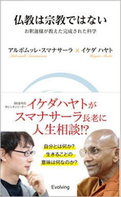
テーラワーダ仏教の長老であるアルボムッレ・スマナサーラに、大人気ブロガーのイケダハヤトがインタビューを試みた一冊。
現代日本の若者の代表として、まったく宗教、仏教といったものに対して予備的な知識や偏見を持たないイケダは、本書の中で宗教や仏教に関する疑問を率直にスマナサーラにぶつけていく。
そうしたイケダの疑問に対して、仏教の合理性を説くスマナサーラ。
プロブロガーであり、ＩＴ世代の申し子とも言えるイケダには、そうした仏教のプラグマティックな面がとても魅力的に感じられるようだ。
本書は、インタビュー構成者の能力が高いためか、他のスマナサーラの対談本に比べても格段に読みやすく、明晰な内容となっている。
本書の後半で、人気者であるがゆえに、ネット上で誹謗中傷されるのが悩み、と語るイケダに、スマナサーラが明快なアドバイスを与える場面がある。
誰かも分からないところで「バカ」「死ね」とか言っている人は、鏡に向かって、自分に「バカ」「死ね」と言っているようなものです。
その人の精神状態が、鏡に映っている感じなんですね。
まともな人間の精神レベルではないんですよ。
なんと智慧に満ち溢れたアドバイスであろうか。
日ごろからＳＮＳなどで、粗暴な言葉や、汚い言葉を使ってしまうことが多い私たちにとって、襟を正されるような指摘である。
仏教とはどのようなものなのかを、やさしく理解したい方におすすめの一冊だ。
『自由になるトレーニング』
プラユキ・ナラテボー、イケダハヤト、ヒビノケイコ
（Evolving、二〇一六年）
タイ在住のテーラワーダ仏教僧プラユキ・ナラテボー、プロブロガーのイケダハヤト、四コマ漫画エッセイストのヒビノケイコの三人による鼎談集。
以前からプラユキに師事しているヒビノと、アルボムッレ・スマナサーラとの対談などを機にテーラワーダ仏教への関心を深めたイケダが、生徒役になってプラユキから仏教について学ぶ構成となっている。
既に本などで仏教について学び、頭の中では理解が進んでいるイケダは、日々の生活の中で理屈としては分かっているが、なかなか実践として仏教を活かせないとプラユキに心情を吐露する。
それに対しプラユキは、本などで学んだ知識を身体で身につけるために寺がある。寺とは本来、心のトレーニングジムなのだと指摘をする。そして、気づきの瞑想が上達するに従い、早い段階で感情の動きに気づけると、「心の奴隷」ではなく、「心の主」となれるという。
そうしたプラユキの説明を聞いたイケダは、現代において僧侶とは「心のプロフェッショナル」なのではないかと考えるようになる。
また、プラユキは現代人は人間関係に苦しむことが多いが、そうした問題を解決する一番のコツは、自分の内面に起こっていることと、他者との関係の中で現実に起こっていることの両方を、ライブでモニターしていけるようになることだと説く。
確かに、そうして客観的に現実に接することができれば、人間関係のトラブルに巻き込まれることもグッと減りそうである。
こうしたプラユキの仏教理解は守旧的に見られがちなテーラワーダ仏教の僧侶として斬新なものである。プラユキは人間の自我を「心のアクションをも含む複数の行動を統合的に認知し、行動に首尾一貫性を持たせることにより、私たちが社会的人間として機能することをサポートする概念」と定義する。そして、決して無暗に自我を否定しないことが「心のトレーニング」としての仏教にとって必要なことなのだと指摘する。
仏教の現代的な意義を理解する上で、入り口となる一冊と言えるだろう。
『だから仏教は面白い！』
魚川祐司
（講談社、二〇一五年）
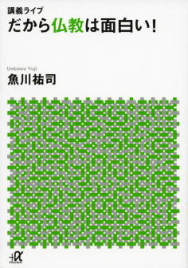
新進気鋭の仏教研究家、魚川祐司による仏教入門書。
講義形式になっているため、仏教に対する予備知識が一切なくてもスムーズに本を読み進められる構成となっている。
ただし、入門書といっても教科書的な知識を詰め込んで「ハイ、お終い」といったものではなく、本の後半では仏教の核心的なテーマである「悟り」とは何かという問題についても鋭く切り込んでいる。
魚川によれば、日本の近代仏教学の問題の一つに、仏教に関する知識を増やせば、法に関する理解ができるという誤解があるという。しかし、魚川によれば、私たちの認知は本来歪んでいるものであって、その歪みの上にいくら膨大な知識を詰め込んでも、悟りに達することはない。
このような簡単な事実は、子どもでも分かりそうなものだが、悲しいかな日本の仏教学の大家といわれるような人物でも、いかなる行の実践も行わないまま、いたずらに頭の中に膨大な知識を詰め込むことに終始しているのが現状である。
そうした知識の収集は、学問的な発展には寄与するものであろうが、悟りとはまったく無縁のものであることは説明すべくもない。
また、本書の前半の「仏教の基本」の章と「無我と輪廻をめぐって」の章に書かれている無常・苦・無我の三相に関する知識は、テーラワーダ仏教であれ、大乗仏教であれ、およそ仏教を学ぶものなら必ず知っておいたほうがよい知識を、非常にコンパクトかつ分かりやすく説いたものなので、本書を全部読むのが大変な人は、この章だけでも読むことをおすすめする。
そして、本書を読了した方は、中級編として魚川の主著である『仏教思想のゼロポイント』を読むことをぜひお薦めする。
『仕事でいちばん大切なこと』
アルボムッレ・スマナサーラ
（マガジンハウス、二〇〇九年）
スリランカ出身のテーラワーダ仏教僧、アルボムッレ・スマナサーラによる、「仕事」をテーマとした法話集。現代の日本で働くビジネスマンに共通するような悩み三四問に、スマナサーラが４ページ程度の回答を与える構成になっている。
第一章では、人間関係の悩みに対する対処方法。第二章では、仕事に対してやる気が起きない場合どうすればよいのかといった対処法が語られる。さらには、第三章では、生きるための底力をつけるための瞑想法の指導。そして、第四章ではそもそもビジネスとは何かという応用問題が語られる。
私が特に感銘を受けたのは、「仕事とは、そもそも何のためにするのか？」という質問に対するスマナサーラの回答である。
働くということを大げさに考えないでください。あえて、仕事という単語を使うのならば、赤ちゃんから寝たきりのお年寄りまで、仕事はあります。
（中略）
では、寝たきりになった人の場合はどうでしょう？ 寝たきりになった人は、身の周りのことはすべて、他人にまかせで生きていかなくてはなりません。面倒をみる人も大変です。とても優しい心が必要です。つまり、心が優しくなければ、寝たきりの人を心配する気持がなければ、介護をすることはできないということです。
そう考えると、介護をする人にとってのエネルギーとは、その心配をする気持ちなのです。それが、介護をする人の報酬となります。寝たきりになっている人がいるおかげで、その報酬を得ることができるわけですから、寝たきりの人もきちんと仕事をしているわけです。
これは、お金の問題ではありません。どのような仕事も、タダ働きということは成り立ちません。必ず、自分が何かを得るためにやっているのです。
どのような立場の人も、ある意味で「働いている」。身体にハンディキャップのある人も、周囲の人々にその人の心を育てる機会を提供するという意味で「働いている」。何と素晴らしい考えであろうか。
昨今、「障碍者は社会的コストが多くかかるため、社会のお荷物的存在である」といった邪見をしばしば耳にすることがある。しかし、本書でスマナサーラによって語られている意見によれば、そのようなことはまったくの勘違いであり、障碍者はその存在そのものが社会にとってかけがえのないものであることがわかる。
そのような意味で、本書は「ビジネス」という射程を超え、「働くこと」「生きること」とは何かを私たちに問い直す一冊といえるだろう。
中級者向け
『ゴータマは、いかにしてブッダとなったのか』
佐々木閑
（ＮＨＫ出版、二〇一三年）
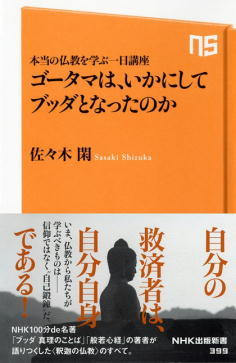
本書は、仏教学者の佐々木閑が、カルチャーセンターで行った公開講座を本にしたもの。そのため、仏教に対する予備知識を持たない受講者を想定しているが、後半になると内容はかなり高度な議論にも及ぶため、「中級者向け」に分類することにした。
本書の素晴らしい点は、今日では世界宗教となっている「仏教」という教えが生まれた時代背景を、歴史学的知見から懇切丁寧に説明しているところである。
紀元前一五〇〇年ごろ、現在のロシア、コーカサス山脈のあたりに住むアーリア人が、インドへの侵略を開始した。アーリア人に必死に抵抗したインド土着の民たちであったが、当時すでに「鞍」と「鐙」を開発していたアーリア人は馬を活用した戦術で、次々にインド土着の民たちを撃破していった。
こうしてインドを征服したアーリア人たちは、現在のヒンドゥー教の原形となるような独自の宗教および世界観をインドに広めていった。そしてその価値観の中で、現在のインドにも残るカースト制度が生まれる。カーストは四つの階級からなる。
①バラモン（司祭）
②クシャトリア（王侯、武士）
③ヴァイシャ（庶民）
④シュードラ（隷属民）
これらのうち、アーリア人は、バラモン、クシャトリア、ヴァイシャのいずれかの階級として生きていく。一方、被支配者であるインドの先住民たちは、最高でもヴァイシャであり、バラモンやクシャトリアにはなれない。また、シュードラにすらなれない最下層のアウトカースト（不可触民）という階級も存在し、先住民の場合、アウトカーストにされてしまう場合もある。
こうしたカースト制度は、血統制によって強固に支えられている。つまり、バラモンの家系に生まれた子は自動的にバラモンになり、シュードラの家系に生まれた子は自動的にシュードラとなる。シュードラの家系に生まれたものが、その後の努力によって、バラモンになることは不可能なのである。
こうした理不尽なカースト制に対し、ゴータマ・ブッダは敢然と反旗を翻した。ブッダは、人の価値は血統によって決まるのではなく、その人のおこなった行為によって決まると断言した。こうした斬新な思想には、当然社会的抵抗もあったが、ブッダ自身がクシャトリアという上位のカーストの出身ということもあり、ある程度社会に受容されていった。こうした背景から、佐々木は仏教を「反バラモン教の宗教」であると定義している。
本書で述べられているような仏教誕生時の歴史的背景は、仏教の実践上必須というものではないものの、その成り立ちを知っておくことは有意義なことであると言えるだろう。そうした知識を得るために、平易な叙述に徹した本書はおすすめの一冊だ。
『現代仏教塾Ｉ』
吉村均・三木悟・岩井昌悟
（幻冬舎、二〇一五年）
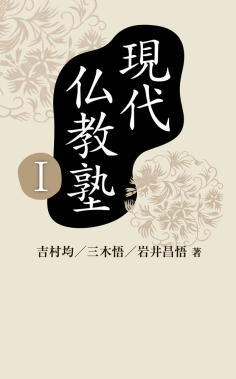
本書は、著者らが開いている「現代仏教塾」の講義を書籍化してものである。本書によれば、「現代仏教塾」とは、
・日本の近代仏教学を問い直す。
・分裂と無関心を超え、バラバラになった日本仏教各宗派の相互理解をめざす。
ための団体であるという。そのため、おのずと本書の内容も「日本の近代仏教学を問い直す」ものとなっている。
三章だてとなっている本書だが、トップバッターはチベット仏教にも造詣の深い、仏教学者の吉村均である。吉村は日本の近代仏教学において「ゴータマ・ブッダは輪廻を説かなかった」とする俗説が定着してしまっていることを指摘し、そのような奇説はチベット仏教では考えられないと述べる。そして、輪廻を否定するのは伝統的な仏教の立場から見れば断見に他ならず、そのような考えを抱くことは邪見であると断言する。
続く二章では、吉村の発表を受けて浄土真宗僧侶の三木悟が、「ゴータマ・ブッダは輪廻を説かなかった」という説が間違いであることの理論的補強をする。三木は、この説が間違っていることの理由として、「ゴータマ・ブッダは死後の世界について語らなかった」という、これまたまことしやかに信じられている説が、間違いであることを指摘する。そして、ブッダが死後の世界について語っている具体的な例として、スッタニパータ、ダンマパダ、サンユッタ・ニカーヤ（相応部経典）といった経典の記述を挙げていく。それを読めば読者は、確かにパーリ経典の中でブッダが何度も死後の世界について語っていることを納得するであろう。
最終章となる三章では、東洋大学准教授の岩井昌悟が登場。「ゴータマ・ブッダは輪廻を説かなかった」という謬説が一体どこから現れたのかを解明する。
岩井によれば、仏教では輪廻を説かなかったという説は、大正時代に仏教学者の木村泰賢と宇井伯寿によって争われた論争に端を発するという。このとき、輪廻を支持する立場に立ったのが木村であり、輪廻に反対する立場をとったのが宇井である。さらに、思想家の和辻哲郎も宇井の説を支持した。かくして、論争の構図は木村ｖｓ宇井、和辻という形で継続したが、木村が昭和五年に四十九歳の若さで没してしまうことにより、この論争は宇井、和辻の側の勝利ということになった。その後、宇井は日本仏教学会の重鎮となり、和辻も思想界の大御所となったことにより、「ゴータマ・ブッダは輪廻を説かなかった」などという奇説は、「定説」として日本の仏教学会に定着してしまうこととなった。
近年、本書の著者でもある吉村均や岩井昌悟らの活躍もあり、「仏教では輪廻を説く」ということがようやく日本の仏教学界でも受け入れられるようになってきた。これは、何ら研究の進展といったものではなく、単に日本の仏教学界の奇妙に捻じれた言説空間が、世界標準の学説と同様になっただけのことだが、誤りを正していくことは大切なことである。現代仏教塾のこれからの発展に、大いに期待したいものである。
『仏教思想のゼロポイント』
魚川祐司
（新潮社、二〇一五年）
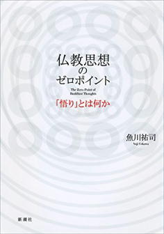
新進気鋭の仏教研究者、魚川祐司の主著である。魚川の著作の魅力は何と言ってもその論旨の明晰さ、明確さにあり、その美質は本書でも如何なく発揮されている。
その好例が、仏教の基本教理について解説した第二章である。本章を読めば、まるで八十年代に、ニューアカ・ブーム1を引き起こした浅田彰の『構造と力』を読むかのように、スラスラと仏教の基本教理が理解できる。難解とされる縁起についての解説も、魚川の手にかかればこのように明快である。
ゴータマ・ブッダの教説においては、およそ全ての現象が、無常・苦・無我という三つの性質を有するものとして語られる。これらはまとめて三相（ti-lakkhaṇa）とも呼ばれるが、実際のところ、それは縁起という現象のより根源的な性質を、三つの仕方で表現しているものに過ぎない。
さらに二章では、この無常（anicca）、苦（dukkha）、無我（anattan）の三相についても、類書にはないような極めて分かりやすい説明が与えられている。
そして、本書の魅力は仏教の基本教理の明快な解説書という部分に尽きるものではない。四章では、『現代仏教塾Ｉ』で岩井らが展開した「ゴータマ・ブッダは輪廻を説かなかった」という日本近代仏教学界における謬見を、これまた明晰な論理展開で木端微塵に粉砕している。論旨の明快さという点だけで見るならば、『現代仏教塾Ｉ』より本書のほうに分かりやすさの軍配が上がるだろう。
現代仏教塾のメンバーだけでなく、魚川のような若い論者が仏教学界にはびこる奇説を取り除いていってくれるのは、本当に心強いことである。若き俊英の次作が、今から楽しみである。
『悟りの４つのステージ』
藤本晃
（サンガ、二〇一五年）
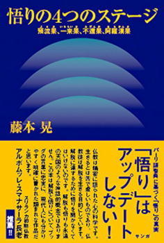
仏教における主題でありながら、これまで仏教書で語られることの少なかった「悟り」。「言語による表現を絶した境地」などと言われるためか、これまで議論の対象となることがあまりなかった悟りだが、近年になり、魚川祐司の『仏教思想のゼロポイント』など悟りをその主題とした著書も徐々に表れてきつつある。
本書『悟りの４つのステージ』は、仏教学者の藤本晃がこの「悟り」というテーマに真正面から取り組んだもの。まず、藤本は大乗仏教は悟りの定義が曖昧かつ多様だが、テーラワーダ仏教には悟りの厳密な定義があることを指摘する。それが、本書のタイトルにもなっている「悟りの４つのステージ」、四沙門果である。
四沙門果は、①預流果、②一来果、③不還果、④阿羅漢果の四つからなる。第一段階の預流果から始まり、第四段階の阿羅漢果に至るのが、テーラワーダ仏教における悟りの階梯である。
では、どうすれば私たちは阿羅漢になることができるのだろうか？ それは、結（saṃyojana）と呼ばれる十種類の煩悩を滅することによって可能となるのである。この結（saṃyojana）は、預流果から阿羅漢果まで、段階を経るごとに減っていく。図にしてみると、このようになる。
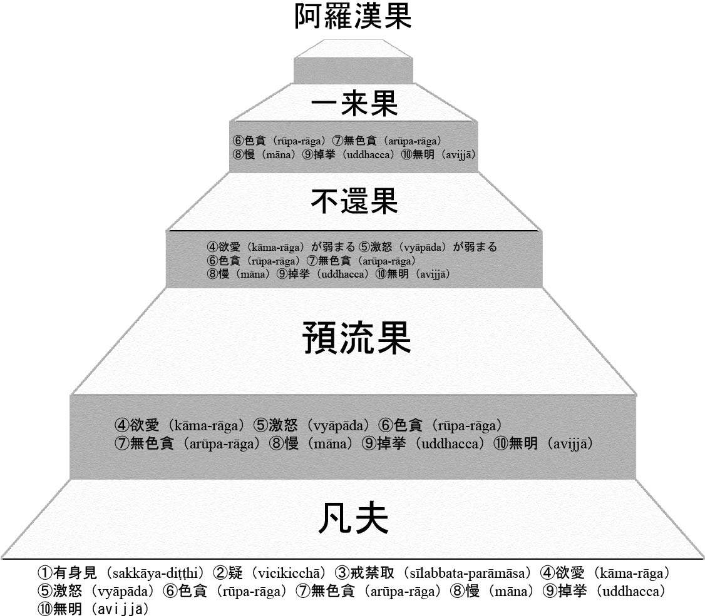
ゆえに、阿羅漢果とは、全ての結（saṃyojana）が滅した状態のことを言うのである。
このように、テーラワーダ仏教においては、大乗仏教と異なり、結（saṃyojana）の滅尽という形で「悟り」の定義がはっきりとしており、その判断にあやふやな所はない。本書では、こうした四沙門果について、これ以上はないほど懇切丁寧に解説がなされている。同じく悟りをテーマとした『仏教思想のゼロポイント』と併せて読めば、仏教における悟りとは何かがはっきりとするであろう。
『マインドフルネス最前線』
香山リカ
（サンガ、二〇一五年）
本書は精神科医の香山リカが、仏教のマインドフルネス瞑想をテーマに、哲学者の永井均、テーラワーダ仏教の僧侶のアルボムッレ・スマナサーラ、宗教人類学者の永沢哲、心療内科医の熊野宏昭の４人と対談したもの。
どの対談もそれぞれ興味深いが、とりわけ第一章の永井均との対談はスイングしており面白い。永井は現代日本を代表する哲学者の一人だが、香山は従来から永井の著作の愛読者であり、その尊敬する永井が瞑想を実践していると知り、自身も瞑想に関心を持ったという。自身の瞑想実践をあくまで信仰とは無関係の「実験」と捉え、実践の結果に対して分析的にアプローチしていく永井の姿勢は哲学者の面目躍如といったところで、他の論者には見られぬユニークな対談となっている。
第二章はアルボムッレ・スマナサーラとの対談。香山は今回の対談より以前にスマナサーラとの間で『生きる勉強』（サンガ）という対談本を刊行しているが、正直、その対談は盛り上がりに欠けるものであった。今回の再対談にあたって、香山は前回の対談時における仏教への勉強不足を認め、今回はより前向きに瞑想に関心を持っているとスマナサーラに率直に語る。今回の対談では、スマナサーラが例示するガザニガ2の著作なども香山はしっかりと読み込んできており、前回の対談に比べ、話は噛みあったものになっている。現在のマインドフルネス・ブームは一過性のものであり、いずれ収束するというスマナサーラのクールな見解が光る。
第三章の対談相手は永沢哲。永沢は宗教人類学者でありながら、チベット密教修行者としての側面も持つ。これまでスマナサーラとの対談の経験などから、テーラワーダ仏教の瞑想に関しては知識のある香山だが、チベット仏教に関する知識はないため、チベット仏教の瞑想法などについて永沢に質問していく。また、永沢は瞑想が人に与える効果について、科学的な測定をおこなう研究を長年続けているが、刑務所の受刑者に瞑想をさせると出所後の再犯率が下がるとする香山の提示したデータに対し、服役中に瞑想をやりたいと思うような受刑者は、そもそも再犯をしたくないと考えている可能性が高く、どこまで瞑想の効果であるか分からないと冷静に返答する部分なども興味深い。
第四章は、心療内科医の熊野宏昭との対談。心療内科医の熊野は、精神科医の香山と隣接した専門分野のため、背景となる知識を共有していることもあり、内容的にも深い対話が繰り広げられる。熊野は心療内科の中でも認知行動療法の専門家であり、この対談を読むことによって、認知行動療法の歴史の中で、どのようにマインドフルネスが取り入れられていったかが分かるようになっている。現在、熊野はＡＣＴという最先端の認知行動療法の普及に取り組んでおり、その要諦とは、「言葉の世界全体から距離をとる」ことだという。やはり、ＡＣＴもその根底には仏教的な思考があり、熊野もその点は包み隠さず紹介しているという。
香山と個性的な四人との対話を通じて、現在ブームとなっている「マインドフルネス」を表層的にではなく、多面的かつ深く理解するのに最適な一冊と言えるだろう。
第二章 タイ仏教
『「気づきの瞑想」を生きる』
プラユキ・ナラテボー
（佼成出版社、二〇〇九年）
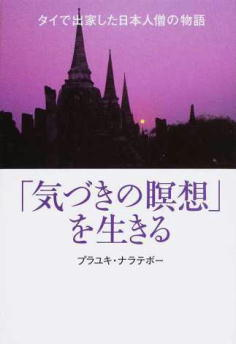
タイ在住の日本人テーラワーダ比丘、プラユキ・ナラテボーの初の著書である。
初めての著作ということもあり、「第一章 出家の経緯と開発僧」では、半ば自伝的に日本人でありながらタイで比丘として出家をした経緯と、約二十年にも及ぶテーラワーダ仏教の比丘としての半生が綴られている。
続く第二章、「タイのテーラワーダ仏教」では、山寺であるスカトー寺の一日を紹介する形で、タイの比丘の日々の生活が活写される。
第三章は打って変わって、瞑想実践のやり方の具体的なマニュアルという体裁。プラユキが属するルアンポー・ティアンの法脈独自のチャルーン・サティ瞑想法の図解入りの解説以外にも、タイの代表的な４つの瞑想法として、
①「アーナパーナサティ」瞑想法
②「プットー（ブッダ）」瞑想法
③「ユップノー・ポーンノー（縮み・膨らみ）」瞑想法
④「サンマー・アラハン」瞑想法
などにも触れられており、示唆に富んでいる。
第四章ではスカトー寺を訪れた日本人たちのケーススタディを通じて、ダンマが説かれる。この、具体的な悩みを抱えた人々のケーススタディを通じてダンマを説いていくプラユキ独特のスタイルは、次作の『苦しまなくて、いいんだよ。』以降、プラユキの法話の定番の形となっていく。
最終章となる第五章では、これまでのまとめとして総論的な形でダンマが説かれ、他者にとって常に「よき縁」でありたいとするプラユキの今後の活動への決意表明ともとれる内容となっている。
冒頭でも述べたように、本書はプラユキの半自伝的な性格の強い本でもあり、彼自身のキャラクターを理解するためにも、プラユキに関心を持った読者は、まず本書を繙くことから始めることをおすすめする。
『苦しまなくて、いいんだよ。』
プラユキ・ナラテボー
（ＰＨＰ研究所、二〇一一年）
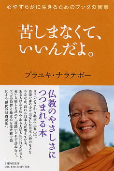
『「気づきの瞑想」を生きる』に続く、プラユキ・ナラテボーの著作の第二弾。前作で自身の来歴などについては語りつくされているため、本書ではいきなり法話から入る構成となっている。
法話のスタイルは、『「気づきの瞑想」を生きる』の第四章で展開されたような、スカトー寺を訪れた日本人たちとのやり取りを、ケーススタディとして再現した形式（プライバシーに配慮するため、事実関係などは架空のものに置き換えられていることもある）。
『「気づきの瞑想」を生きる』刊行以降、プラユキの日本での知名度は高まり、本で彼のことを知り、スカトー寺で瞑想実践に取り組む日本人も増えてきた。そのため、『「気づきの瞑想」を生きる』で紹介されていた日本人たちはＮＧＯ関係者などが中心であったが、本書に登場する人々は、仏教や瞑想に関心を持っている人たちが多い。
そんな日本人瞑想修行者たちに対し、プラユキは彼らが陥りがちな、「有我である自分が、修行によって無我になる」という考え方は間違いだと諭す。彼の指導を受けた修行者の感想を引用しよう。
これまでは『私の欲や怒り、慢心や自我を取り除くんだ。打ち落とすんだ』といった感じでやってきました。なぜなら、私には汚れきった心や自我があるので、その汚れを落とさなければ、本来の無我に至れないって思っていましたから。
でもお話を聞いていて、そうか、すでに無我なんだ、だからこそ、私の意図とは関係なく思考や感情も湧き上がっては消えていくんだ、それこそが無我ゆえのあるがままの現象だったんだって納得がいきました。だいぶ心が楽になってスッキリした感じです。
また、プラユキは日本人の瞑想修行者が生真面目すぎ、根を詰めすぎて瞑想をしていることに危惧を抱き、自分がかつて師匠であるルアンポー・カムキエンから言われた言葉を紹介している。
「ユキ（私の名）、タム・レンレンでな。空腹感や欲、いらだちや焦り、そのような感覚や感情、また思考が生じてきても、あるいはそういったものにわれを忘れてしまっても、マイペンライ（気にしなさんな）。『ありがとう』と言って、そこから学ばせてもらえばいいんだぞ」
ちなみにタム・レンレンとはタイ語で「遊び心でおこなう」というような意味だそうである。瞑想実践にはリラックスが大事ということはいえそうだ。
本書はこうした瞑想実践をおこなっていくうえで陥りがちな落とし穴を回避するためのヒントが満載である。『「気づきの瞑想」を生きる』が気に入ったのなら、ぜひ本書も読んでみてほしい。
『仕事に効く！仏教マネジメント』
プラユキ・ナラテボー
（Evolving、二〇一六年）
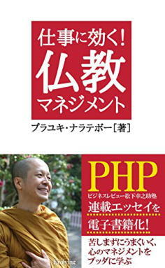
本書は、過去に『ビジネスレビュー 松下幸之助塾』に連載された記事をまとめ、電子書籍化したもの。
『ビジネスレビュー 松下幸之助塾』は書店売りの一般雑誌ではなく、経営者向けの会員誌のため、読者は基本的に経営者もしくは企業の管理職クラスが想定されている。
そうした媒体で、堅い記事が並ぶ中、「ホッと箸休めのできるような仏教の話を」との要請で執筆されたものであり、必ずしも仏教に強い興味を持っていない人でも読めるような内容になるようにと、心がけられている。
そのため、各話の枕は時事的なニュースから入ることが多いが、上記のような背景から、プラユキが他の本ではそれほど多く語ってこなかった師の開発僧としての側面が垣間見れるエピソードが含まれ、興味深い。
中でも「タイの政治的対立」という話では、タイの政府と反政府派の政治的対立について、踏み込んだ記述をしている。
こうした政治的対立は、今や世界中の至る所で見られるが、プラユキはそうした対立を決してネガティブには捉えず、「産みの苦しみ」のプロセスと解釈する。
そしてそうした現象の本質を、松下幸之助氏の言葉を借り、「森羅万象は全部、対立しつつ調和している」と表現している。
では、そのような対立関係に巻き込まれないためにはどうすればいいのか？
プラユキ師は私たち自身の気持ちや考えに気づくとき、自身と自身の感情との間に距離感が生まれるという。
すると、感情との一体化を脱した心は冷静さを取り戻し、あるがままの曇りのない心へと回帰する。プラユキによれば、そうした心は誰の心にも備わっており、師はそうした心を「仏性」と呼ぶ。
それ以外にも、かつてタクシン派と反タクシン派が対立し、あわや流血の事態が生じそうになった際に、スカトー寺の住職であるパイサーン・ウィサーロが、「武器の托鉢」を行い、双方のデモ隊から武器を回収することによって惨事を防いだエピソードなど、興味深い話が多く含まれている。
『自由に生きる』
プラユキ・ナラテボー
（サンガ、二〇一五年）
本書は主に、プラユキが仏教雑誌『サンガジャパン』に寄稿した記事や、対談などを元に編まれている。掲載されている対談は二本で、一つは作家の石井光太と、もう一つは心療内科医の熊野宏昭とのものである。プラユキ自身が熊野の著作の愛読者ということもあり、対談としては熊野とのもののほうが盛り上がりのある内容となっている。
瞑想指導に関する記事としては、例外的に雑誌『大法輪』に掲載されたものを収録した、『アーナパーナサティの実習』が興味深い。以前にもプラユキは『「気づきの瞑想」を生きる』の中でアーナパーナサティについて触れたことがあったが、ここまで詳細に実践法を解説した記事は、本書が初めてだろう。
法話のパートでは、四章の「たかが言葉、されど言葉」が光る。ラべリング瞑想における言葉の功罪といったテーマで、瞑想中にラべリングをおこなう際に、陥りがちな間違いに対して、注意を喚起している。これは、瞑想実践者にとって、有益なアドバイスとなるだろう。
また、第二章「ブッダの大地を築く、タイ仏教の開発僧」では、瞑想指導者という範疇に留まらない、プラユキの開発僧としての一面に触れられる。ナーン和尚とサナーン師という具体的なプラ・ナックパッタナー（開発僧）を例に、現代のタイ仏教の姿が生き生きと描かれているのが魅力的だ。
三百ページを超すボリュームのある本だが、これまでプラユキの本を読んできて、彼のファンとなっている読者にとっては外すことのできない一冊だろう。
『脳と瞑想』
プラユキ・ナラテボー、篠浦伸禎
（サンガ、二〇一六年）
プラユキと、脳神経外科医である篠浦伸禎による対談本。
普通の対談本では、それほど対話者双方に対する予備知識の説明がなく対話が始まることが多いが、本書の構成は丁寧で、第一部で、プラユキによる瞑想実践の説明と篠浦による彼の専門である覚醒下手術の概説が五十ページにわたって行われているため、読者は対話者双方の考え方の背景をよく理解した上でスムーズに第二部の対談本編へと入っていける。
また、第二部の対談本編では、よくある仏教者と科学者の対話という枠組みを超えて、篠浦の疑問やアイディアに触発されたプラユキが、瞑想実践者に役立つヒントを数多く提示してくれる。
そこで登場する仏教用語を理解するにあたって、大変効果的になっているのが、鈴木勝美によるイラストである。
仏教の用語は、パーリ語であれ、漢語であれ、とかく抽象的になりがちなもの。そんな仏教用語を私たちが身近に理解する際の助けとして、鈴木のイラストはとても有用なものだ。
さらに本書の中で、仏教の中で強調される信（サッダ―）についても、プラユキはユニークな解釈を披露している。
パーリ語を英訳した辞典をひもとくと、そこには「信」の説明として、「put oneself on ～」とあります。直訳すれば、「自身（の心）を～の上に置く」で、しっかりと対象と向き合う」といった意味あいが強い。これがもともとの「信」の意味で、そういった姿勢が大事だとブッダは言っていたのです。「仏様を拝みなさい」「ブッダを拝め」とは言ってないのです。
信（サッダ―）とは本来、むやみにブッダや仏教の教えを信じることではないというのである。これは、極めて正鵠を得た解釈だろう。通読することによって、仏教への理解が深まること間違いなしの一冊だ。
『「気づきの瞑想」で得た苦しまない生き方』
カンポン・トーンブンヌム（浦崎雅代訳）
（佼成出版社、二〇〇七年）
本書の著者、カンポン・トーンブンヌムはタイで生まれ、苦学して教師の資格を取得し、体育の先生となる。
だが、そんなカンポンに悲劇が訪れる。水泳の飛び込みの際の事故で、半身不随の後遺症の残る重傷を負ってしまったのだ。それから長い期間、カンポンはつらい日々をすごす。
そんな彼に光明となったのは、仏道。そして、チャルーン・サティ（気づきの瞑想）の実践によって、智慧を高めていった彼は、多くの人々に希望をあたえる存在となっていく。
本書では、自伝的な体裁でこうしたカンポンの半生が語られていく。第一章の「事故に遭うまでの人生」では、貧しいながらもよき家族に恵まれ、体育教師となるサクセス・ストーリーから一転、半身不随の身となる事故までが描かれる。
第二章、「法（タンマ）との出会い」では、寝たきりの日々の中、暗闇の中で光を求めるかのように仏法と出会ったことが語られる。何十冊もの仏教書を読み、ぜひ、この人のもとで瞑想修行をしたいとカンポンが思ったのが、ルアンポー・カムキエンだ。しかし、こんな寝たきりの自分でも修行などできるのだろうかと逡巡したカンポンは、思い切ってカムキエンに手紙を書いてみる。その、カムキエンからの返事が感動的だ。
私はあなたの善き仲間になれることをとても嬉しく思います。
修行に関して誤った方向に陥らないように導くお手伝いをいたしましょう。自分自身を見つめ、感じていく瞑想のやり方をお勧めします。たとえ体が不自由で横になっていたとしても修行は可能です。
身体に障害があっても、瞑想修行は可能であるという師カムキエンの言葉に励まされ、瞑想に打ち込むカンポンの姿が第三章の「気づきの瞑想の実践」で描かれる。そして、その修行の結果としてある現在の境地が第四章「苦しまない生き方」で語られる。巻末には瞑想実践する際のＱ＆Ａも用意されており、実践者にとって非常に有益なアドバイスとなる。
身体に障害があっても、瞑想によって苦しみに打ち勝ったカンポン・トーンブンヌムの姿は、瞑想をする誰しもにとって、大いなる励ましとなるであろう。
『心が自由になる、初期仏教30の説法』
パイサーン・ウィサーロ（浦崎雅代訳）
（イケハヤ書房、二〇一六年）
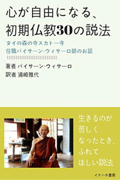
本書の著者、パイサーン・ウィサーロは、現代のタイで最も影響力を持つ開発僧の一人である。現在、スカトー寺の住職を務める傍ら、宗教者と医療従事者を結びつけるネットワーク作りに尽力するパイサーンの活動は、タイ全国から注目を集めている。
本書は、そのパイサーンの30の法話に、訳者の浦崎雅代がコメントを付したもの。元々の説法はタイ人向けにおこなわれたもののため、話の背景が分かりにくいものもあるが、浦崎のコメントのおかげで日本人読者もスムーズに法話を理解できるようになっている。
パイサーンの法話は、簡潔にして明瞭だ。
他者のことを思いやる人は幸せになりやすい人です。
なぜならその人の心は広くて自分だけよければいいという「我」が少ないからです。
その空間が幸せを大きくしてくれるスペースなのです。
では、私たちはどのようにしてパイサーンの説くように「我」を少なくしていけばいいのだろうか。それには、心のトレーニングが必要だと、パイサーンは語る。
体のトレーニング。それは体を動かすこと。運動すること。
（中略）
心のトレーニングは、体とは逆です。
「動かない」「ただ静かにする」ことを訓練するのです。
（中略）
心の訓練・トレーニングというのは、「置く練習」「手放す練習」です。
それは容易いことではありません。なぜなら、心は無自覚にいろんなものを背負ってしまう性質があるからです。
決して簡単ではないですが、とても大切です。
いろんなものを置く、手放すことを訓練すればするほど、心の力は強くなっていきます。
面白いですね。反対なんです。
体は、重いものを持てば持つほど、力が強くなり心は、重いものを手放せば手放すほど、力が強くなります。
本書はいわゆる瞑想実践のためのマニュアル本ではないが、読み進めていくと先述したような瞑想実践の本質に関わるアドバイスも多く含まれている。夫の浮気、老後の心配、ＬＧＢＴの問題についてといった具体的な話題から、どのように心を成長させていくかといった高度な話題まで、多様な内容が詰まっているのが本書の魅力だ。
また、法話の長さも短いものから、長めのものまで分類され、整理され配置されている。頭から終わりまで通読するのではなく、そのときの気分によって、ピックアップして30の法話を味わうのも、本書の楽しみ方の一つと言えよう。
『[増補版]手放す生き方』
アーチャン・チャー（星飛雄馬、花輪陽子、花輪俊行訳）
（サンガ、二〇一五年）
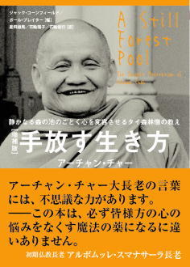
二十世紀のタイ仏教を代表する僧侶の一人であったアーチャン・チャーのもと、数年にわたり出家生活を送った西洋人ジャック・コーンフィールドとポール・ブレイターの編纂による師の言行録『A Still Forest Pool』の邦訳。主にラオス語で説法をおこなったアーチャン・チャーの言葉を英語で記録したものであり、一九八五年に原書の初版が刊行されている。
著者のアーチャン・チャーは、一九一八年、タイ東北部イサーン地方ウボンラーチャターニー近郊生まれ。九歳で沙弥出家。二十歳で比丘出家をする。一九四六年、父の死をきっかけとして、仏法の真髄を求めるための遊行の旅に出る。数年の遍歴遊行の後、アーチャン・マンに師事。瞑想実践に打ち込む。一九五四年、生地近郊の森に自らの僧院であるワット・パー・ポンを設立。アーチャン・チャーの卓越した指導力は瞬く間にタイ全土に広がり、簡素な寺院として始まったワット・パー・ポンはタイ有数の森林僧院となる。
一九七〇年代になると、アーチャン・チャーの声望は海外でも高まり、外国からも修行のためにワット・パー・ポンを訪れるものが増えてきた。その中に本書の編纂者である、ジャック・コーンフィールドとポール・ブレイターもいたのだ。
本書の中に収録されている法話は、基本的に出家者を対象におこなっているものなので、それほど専門的なものではないにせよ、仏教用語も頻出する。そのため、本書の仏教概論の入門編で解説される程度の仏教の基本的な知識がある人々が、読者の対象となる。
そうした仏教の基本的な知識のある読者は、本書を第一章から順に読んでいってもいいが、これまでほとんど仏教書を読んだことのない読者が本書を手に取った場合は、第五章の「森の教え」と第六章の「師への質問」を読んでみるといいだろう。その二つの章は、比較的仏教用語も少ない。
また、自身の瞑想実践のヒントが欲しいと思っている読者は第四章の「瞑想について」を、テーラワーダ仏教の悟りの境地に関心のある読者は第七章の「悟りへの道」から読んでみてもいいだろう。このように、本書は冒頭の第一章から最終章の第七章まで通読するというよりは、自分の関心に合わせて、随時興味のある部分を読んでみるのがおすすめである。
『無常の教え』
アーチャン・チャー（星飛雄馬訳）
（サンガ、二〇一三年）
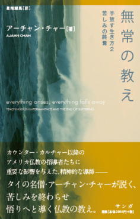
『手放す生き方』に続き、アーチャン・チャーのもと、数年にわたり出家生活を送った西洋人ポール・ブレイターが師の法話を編纂した、『Everything Arises, Everything Falls Away: Teachings on Impermanence and the End of Suffering』の邦訳。
『手放す生き方』と話のつながりはないが、続編的な位置づけの作品である。アーチャン・チャーの英語著作としては最初期に発表された『手放す生き方』に比べ丁寧に編集されており、無常（anicca）、苦（dukkha）、無我（anattā）の三相それぞれに関連した法話を集め一つの章として立てるなど、読みやすくするための工夫がなされている。
また、本書の中には「原初の心（original mind）」という表現が数回登場する。その原初の心についての描写を見てみよう。
私たちの本当の心は、その自然な状態において、不動であり、汚れのないものです。それは、清浄で光り輝くものです。その心が曇り、汚れたものになっているのは、それが感覚の対象と接触した際に、快、不快といった判断を通じてそれらの影響下に入ってしまっているからなのです。心は本来的に汚れているのではなく、それがまだダンマの中に確立していないがゆえに、外部の現象によって汚されてしまっているのです。
本書の刊行以降、何人かの読者から、
「テーラワーダ仏教の教義では、このような原初の心などというものを説くのか？」
と質問を受けた。おそらく質問者は、上記のような表現から、大乗仏教の自性清浄心3を連想したのではないかと思われる。だが、初期仏教においても、アングッタラ・ニカーヤなどの文献に、自性清浄心の考えの原形となるような心性本浄説が説かれている4。
そうした意味では、本書におけるアーチャン・チャーの心の本質に関する議論も、初期仏教の教理を逸脱したものではないと考えられるのではないだろうか。
『手放す生き方』を読んで、アーチャン・チャーの教えに関心を持った読者にはぜひおすすめの一冊である。
『アチャン・チャー法話集 第一巻 戒律』
アチャン・チャー（出村佳子訳）
（サンガ、二〇一六年）
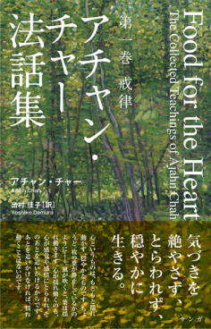
アチャン・チャーの主著である『Food for the Heart』の翻訳。『手放す生き方』『無常の教え』では「アーチャン・チャー」と人名表記されていたが、本書では「アチャン・チャー」との表記になっている。
英語版は一冊だが、日本語訳では、全九百ページ以上にもなることが想定されるため、全三巻に分冊され刊行されることになったとのこと。
本書はその中の第一巻「戒律」編だが、テーラワーダ仏教の戒律について細々とした知識が解説されたものではない。
そこには、「戒律」という一つの主題があるものの、アチャン・チャーの智慧の光は自由闊達な形で、私たちの日々の生活を取り巻く様々な悩み、トラブルに対応するヒントや処方箋を与えてくれる。
また、アチャン・アマローによる「はじめに」には本書が編纂された背景や、アチャン・チャーの略伝、本文中に頻繁に出てくる仏教用語の解説などが記されており、本書を読む上の「解説」の役割を果たしている。
『マインドフルネス』などの名訳で知られる出村佳子の訳も大変読みやすく、これまで『手放す生き方』や『無常の教え』でアチャン・チャーの語り口に慣れている読者は、すんなりとアチャン・チャーの語るブッダの教えの世界へと入っていけるはずだ。
今から、続巻の刊行が待たれる一冊である。
『呼吸によるマインドフルネス』
ブッダダーサ比丘（浦崎雅代、星飛雄馬訳）
（サンガ、二〇一六年）
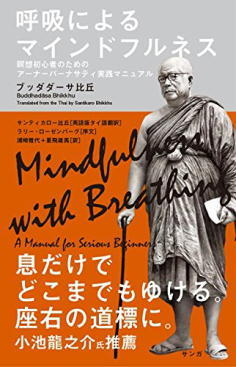
本書は、Buddhadāsa Bhikkhu, Mindfulness with Breathing: A Manual forSerious Beginners, Wisdom Publications, 1997 を翻訳したもの。原書は、ブッダダーサの弟子であるサンティカローが、ブッダダーサのタイ語の法話を英語に訳したものである。そのため、タイ語の原本というものは存在しない。
とはいえ、本書を正確に訳すためにはタイ語の知識は重要である。そのため、本文をタイ語に堪能で、タイ仏教書の翻訳経験のある浦崎雅代が、それ以外のサンティカローによる解説部分を星飛雄馬が担当している。ちなみに、ブッダダーサ（Buddhadāsa）はパーリ語読みの出家者名で、タイ国内では「プッタタート」とタイ語の発音で呼ばれ、親しまれている。
ブッダダーサは、一九〇六年、スラートターニー県に長男として生まれた。父は中国系タイ人で、乾物屋を営んでいたという。中学三年の頃、父の他界に伴って、進学を断念し、家計を助けるため、家業を継いだ。
二十歳となった頃、ブッダダーサは、タイの一般的な慣習に従い、両親、先祖に善徳を積むためもあり、一時出家をした。だが、深く法を追求しようとする兄の心を察した弟が、大学を中途退学して家業を継ぐ決心をしたため、そのまま出家生活を継続。二年後には首都バンコクに拠点を移し、教学の研究を続けたものの、伝統的な経典解釈と自身の理解に齟齬が生まれたため、自分の理想とする仏教実践を志し、スラートターニー県に帰郷。弟の協力を得て、自身の僧院であるスワンモーク森林僧院を設立した。
ブッダダーサは従来の森林僧のような、森に籠りただひたすら涅槃を追求するという姿勢とは異なり、社会との交わりも重視した。こうした彼の思想は、「仏法社会主義（dhammic socialism）」と呼ばれ、パユットーの著作と共に開発僧たちの理論的支柱の一つとなった。
そうして多くの弟子を育て、また書籍などを通じてタイ社会に大きな影響を与えたブッダダーサは、一九九三年、多くの人々に惜しまれながらこの世を去った。
本書は、ブッダダーサが仏道を学ぶにおいて、最も重要な修行法、瞑想法であると考えていたアーナパーナ・サティの実践マニュアルである。本書で解説されるアーナパーナ・サティの実践法は、中部経典（Majjhima-nikāya）の「呼吸による気づきの教え経」の記述に基づくものであり、本書には経典の現代語訳も全文収録されている。
英米圏で本書が出版された一九九〇年代当時、ティク・ナット・ハンの『ブッダの〈呼吸〉の瞑想』と並び、瞑想を本によって独習する実践者にとって、この本はバイブルのような存在であった。もちろん、瞑想はきちんとした指導者に就いて学ぶことが望ましいが、環境などの制約によってそれが叶わないものにとって、本書は頼りがいのあるガイドとなってきた。
今後も、アーナパーナ・サティを実践する修行者にとって、『ブッダの〈呼吸〉の瞑想』と本書は、座右の書となっていくであろう。
『テーラワーダ仏教の実践』
ポー・オー・パユットー（野中耕一訳）
（サンガ、二〇一二年）
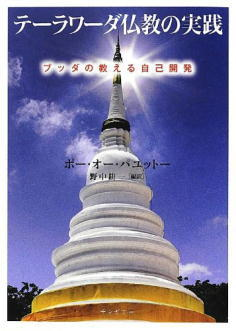
本書の著者、ポー・オー・パユットーは、一九三八年、タイ国スパンブリー県に生まれた。本名をプラユット・アーラヤーングーンという。十三歳で沙弥出家。比丘になる前の沙弥の立場（二十歳未満）で、パリエン（パーリ語能力の試験）最上級の九段に合格。パーリ語九段は、ほんのわずかな者しか合格したことのない難関中の難関の試験であり、沙弥にしてその試験に合格するのは、驚異的なことである。
パリエン九段合格の功績により、パユットーは、一九六一年、エメラルド寺院にて得度。翌一九六二年には、チュラロンコン仏教大学で首席として仏教学の学位を取得。一九九四年、ユネスコ平和賞を受賞。現在は、ナコンパトム県、ヤーナウェーサカワン寺の住職を務める。
タイ国サンガ内の僧位としては、ソムデット・プラサンカラート（法王）、ソムデット・ラーチャーカナに次ぐプララーチャーカナの地位にある。パユットーには多数の著書があり、その多くは法話集（講演録）であるため、その正確な冊数は不明だが、少なくとも三百冊は超えると言われている。
本書は、そうしたパユットーの講演録を書籍化したものである。長らく私家版として流通してきたが、入手が難しく幻の名著と呼ばれてきた。本書は、私家版の「自己開発」に新論文を加えた増補完全版である。
本書は講演録ということもあり、在家の仏教徒に対し、四聖諦、知足、不放逸、慈悲喜捨という仏道の基本的な概念の意義を説き、具体的にどのように実践を行うべきかの解説が加えられている。
仏道には難しい概念も多く、かつそれを説いているパーリ語は日本人に馴染みが薄いため、それぞれの概念が錯綜し、混乱してしまうことがよくある。
本書を読めば、それらの概念がきれいに整理され、日々の修習のモチベーションアップが図られることになるだろう。
『仏法の思考と実践』
ポー・オー・パユットー（野中耕一訳）
（サンガ、二〇〇九年）
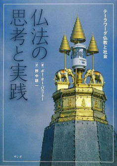
『テーラワーダ仏教の実践』に続く、ポー・オー・パユットーの法話集の第二弾。だが、前作とは異なり、本書は極めて特殊な背景において成立している。本書の翻訳者である野中耕一は、「あとがき」の中で、本書の成立の詳しい経緯について解説している。
『仏法の思考と実践』のもととなった講演が行われた当時、タイ仏教界には一つの大きな事件が起こっていた。当時、タイには熱狂的な信者を持つ、ヤントラ比丘という僧侶がいた。その人気たるやすさまじいもので、ヤントラ比丘への食事の布施の会が催されるとなれば、五万人を超える群衆が会場に押し寄せ、信者たちは何とかしてヤントラ比丘にお布施をしようと押し合いへし合いになるほどの大騒ぎであった。
ところが、一九九四年一月十七日、タイの大衆紙「マティチョン」の誌面に衝撃的な記事が躍った。一九九三年にヤントラ比丘が布教のためにヨーロッパを訪れた際に、同行した在家の女性信者に、僧侶にあるまじき「不適切な行為」を行ったというのである。
多大なる尊崇を集めるヤントラ比丘に限ってそのようなことはないと多くの人々は思ったが、それ以外にも多数のセクシャル・ハラスメントの疑惑があることが判明した。それを受けて反ヤントラ比丘の急先鋒となったのが、バンコク近郊のノンタブリ県、スワンケーウ寺のパヨーム住職である。パヨーム住職がヤントラ比丘に対する糾弾の手を強めると、一月二十四日にはスワンケーウ寺が何者かに銃撃されるという物々しい事件も発生し、ヤントラ比丘のスキャンダルは緊迫の度合いを高めた。そのようななか、二月五日にパユットーがスワンケーウ寺に招かれ、「仏教徒への質問」と題する講演を行ったのである。
この法話の中で、パユットーは、神通力（超能力）を持つことは必ずしも聖者であることを意味するわけでなく、悟りを開いた阿羅漢のなかにも、神通力を持つ者と、持たない者がいることを語った。悟りを開くことの本質はあくまで煩悩から離れることにあり、神通力の有無はそれとは関係ないというのである。これは、ヤントラ比丘の事件を意識しての法話であると考えて間違いないであろう。
タイの仏教界では、どうしても超能力があるとされる比丘に人気が集中する傾向がある。アーチャン・チャーの著書の中にも、彼のもとに宝くじの当選番号を教えてもらいにやってくる村人たちが後を絶たないというエピソードが紹介されているし、高僧によって制作されたプラ・クルアン（タイに伝わるお守り）は高額で取引をされているのが現状だ。
結局、ヤントラ比丘はタイ国サンガの最高統治機関である長老会議によって、一九九五年三月、僧籍をはく奪された。その後、ヤントラ比丘はアメリカに逃亡、現在はカリフォルニアで、その信者と共に暮らしているという。
本書は上記の「仏教徒への質問」という法話の他、仏法の入門的な知識について平易に解説した「正しい仏法の実践方法」と如理作意について本格的に論じた「如理作意のすべて」という貴重な二つの論考を含んでいる。前者は講演録だが、後者はパユットー自らが執筆したものであり、口述したものを本にした際にありがちな冗長さは一切なく、精緻な論理展開で如理作意について解説されている。
『テーラワーダ仏教の実践』が気に入ったのなら、ぜひ読んで欲しい一冊である。
『仏法』
ポー・オー・パユットー（野中耕一訳）
（サンガ、二〇一二年）
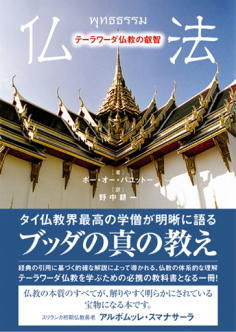
『テーラワーダ仏教の実践』、『仏法の思考と実践』の二冊は、パユットーの法話を文書化し、書籍化したものだが、本書『仏法』はパユットー自身が執筆した本である。そのため、口述の本にありがちな冗長な部分は少なく、論述も体系立っている。
本書の中でパユットーは仏法を理解する上で欠かせない概念として、「五蘊」「六処」「三相」「縁起」「業」「四聖諦」の六項目をピックアップし、これらに解説を与えている。それらの論述は極めて明晰でシャープなものだが、加えて持論を述べる際には必ずといっていいほど典拠となる経典上の引用を挙げているので、説得力も十分だ。
そうして第一部で仏法を理解する上での最低限の知識を身に着けた後、第二部では実践編として八正道の解説に入る。ここではまず、八正道の各項目に定義が与えられ、第一部同様に経典の引用によってその根拠が示される。そして、しかる後、八正道の各項目をどのように実践していくかが丁寧に説かれる。瞑想マニュアル的な本の多くは、八正道の内、正念と正定の解説に大半の記述が割かれ、他の六項目はおろそかになりがちだ。しかし、本書では、仏道修行は八正道の各項目をバランスよく実践していくことにより完成されるのだということが、よく理解できるような構成となっている。
中級者向きだが、仏教の教科書として、ある程度実践を積んだ修行者にはぜひ読んでもらいたい一冊である。
第三章 ミャンマー仏教
『ミャンマーで尼になりました』
天野和公
（イースト・プレス、二〇一三年）
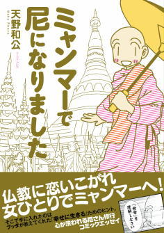
ミャンマー仏教に興味を持った人に、一冊目に読む本としてぜひおすすめしたいのが、天野和公による本書である。本書は、コミックエッセイというポップな体裁を取っているが、内容は真面目なミャンマーでの瞑想修行体験記となっており、類書が少ない中で貴重な書籍であると言える。
プロローグ「余は如何にして仏道を志すに至りし」では、天野が生まれてから寺嫁となるまでの仏縁が描かれる。
その壱「そうだ、ミャンマーへ行こう！」では、天野がミャンマーに渡り、瞑想道場で過ごした日々の思い出が語られる。瞑想道場という特異な環境とはいえ、ミャンマーと日本の日常生活は大きく異なり、ちょっとしたことでも驚きの連続となる天野の日常が、ほのぼのとしたタッチで描かれている。また、「仏教キーワード」というコラムのコーナーでは、イラストを活用して、仏教用語の基礎が分かりやすく解説されている。
その弐「生涯の師、現る」では、このコミックの第二の主人公ともいうべきウ・コーサッラ師が登場、天野の修行を導く。
そうして、師匠を得、順調に進んでいくと思われた天野の修行だが、その道のりは平たんではなかった。その参「七転八倒の瞑想修行」では、天野が直面した瞑想修行における壁が克明に描かれる。
また、天野はマハーシ瞑想センター、パオ瞑想センターというミャンマーを代表する大瞑想センター双方での修行を体験しており、読者はそれぞれの道場の個性も本書から学びとることができるようになっている。
ミャンマー仏教の大まかなイメージをつかむのに、最適の一冊と言えるだろう。
『仏教先進国ミャンマーのマインドフルネス』
西澤卓美
（サンガ、二〇一四年）
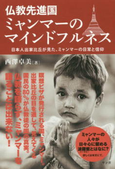
『ミャンマーで尼になりました』を読み終わったら、ぜひ次に手にとってもらいたいのが本書だ。なぜなら、『ミャンマーで尼になりました』に登場する天野和公の師、ウ・コーサッラこそが、本書の著者である西澤卓美だからだ。
本書の著者、西澤卓美はミャンマーのテーラワーダ仏教で出家をし、十年間の修行を経て長老（指導者）となり、その後、日本に帰国。六年間指導者として活躍した後、還俗をしたという異色の経歴の持ち主。
巻末の「参考文献」の一覧を見ても分かるが、これまで日本語で書かれたミャンマー仏教書は文化人類学者か、地域研究の研究者によるものが大半で、本書のように「生きたミャンマー仏教」について詳述されたものはなかった。
本書には、ミャンマー仏教の基礎知識や瞑想センターでの日常生活のあり様が平易に綴られ、さらには親切にも、これからミャンマーで出家し、瞑想修行をしたい人のためのビザ取得や渡航手続きのガイドまで完備してある。
私自身、約十年前にミャンマーに渡航し、瞑想センターで修行をした経験があるが、その際にこのような本があったら、どれほどスムーズにミャンマーに渡ることができただろうかと思った。
さらに、この本には現代ミャンマーを代表する大長老がたの興味深い略伝のみならず、ウェイザー、ナッ神といった、ミャンマーの人々の世界観（精神世界）には欠かせない概念についてもきめ細かく説明されており、本書を通読すれば、「ミャンマー仏教とは、このようなものなのか」という大まかな概略がつかめることは間違いないだろう。
『いろいろ悩みがあったので、西澤さんに訊いてみた。』
西澤卓美
（あたま出版、二〇一六年）
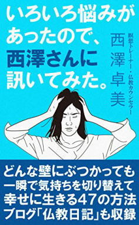
「仏教先進国ミャンマーのマインドフルネス」の著者、西澤卓美の第二弾。ユニークなタイトルは、十七年間、テーラワーダ仏教の比丘として修行に励み、還俗の後、現在は仏教カウンセラーとして活躍する著者に質問をしてみたということに由来する。
子ども、青年、中年と世代別に分かれた多様な悩みに対し、快刀乱麻にスパッと智慧に満ち溢れたアドバイスを与える所は、さすがに研鑽の賜。
仏教カウンセラーということで、悩みの内容は臨床心理士が担当するような精神病理学的なものではなく、人間関係など社会的コミュニケーションにまつわる話が中心となる。
そのため、現在人間関係などで悩んでいる方には、きっと自分にも参考になるアドバイスが本書には含まれているはずだ。
悩み相談編で語られる内容は、宗教色も薄く、仏教的な智慧を応用する際にも著者は「仏教の立場ではこう考えますが...」と付言しているため、仏教に関心のない読者も気軽に読める内容となっている。
その一方で、仏教編では本格的なテーラワーダ仏教の教理にも平易な解説が与えられ、加えてヴィパッサナー瞑想の実践法まで網羅されている。
そうした意味で、本書は一冊で二度おいしい、充実した内容の本だと言えるだろう。
『ゆるす 読むだけで心が晴れる仏教法話』
ウ・ジョーティカ（魚川祐司訳）
（新潮社、二〇一五年）
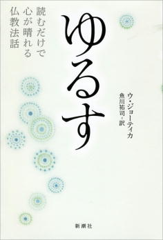
本書の著者のウ・ジョーティカは、日本ではまだそれほど知名度がないが、ミャンマーでは仏教にそれほど関心のない人でも誰もが知るようなベストセラー作家的な僧侶。
ウ・ジョーティカの主著は瞑想実践のためのガイドといえる『自由への旅』や、書簡集である『スノー・イン・ザ・サマー』になると思われるが、本書は主に私たちの日常生活についての心構えについて語った法話集。
そのため、本書は瞑想実践をしているか否か、または仏教徒であるかを問わず、複雑な人間関係や、忙しい日々に悩まされる現代の日本人にとって、処方箋となってくれるような有益なアドバイスに満ちた本となっている。
そのような意味で、数あるウ・ジョーティカの著作の中で、まずこの『ゆるす』が第一弾として邦訳されたのは正解だっただろう。
訳者の魚川祐司の訳は流麗かつ明晰で、とても読みやすい日本語となっている。
タイトルの「ゆるす」は、抽象的な他者への癒しを指したものではない。本書の中には、ウ・ジョーティカが幼少時代、両親からまったく愛されなかったこと。また、学校で一部の教師から理不尽な差別を受けたことが赤裸々に語られている。
ウ・ジョーティカがそうした苦しみをいかに受容し、「許し」ていけたか。本書におけるそうした許しの過程のプロセスの描写は、仏教の教理を杓子定規にあらゆるケースに当てはめ、「人は他者に慈しみの念を持つべき」と説くような本と、本書を大きく質の異なるものにしている。
そうした意味で、本書はまったく仏教に関心のない人でも、人間関係に悩んでいる人には自信を持ってお薦めできる本だ。
『自由への旅 「マインドフルネス瞑想」実践講義』
ウ・ジョーティカ（魚川祐司訳）
（新潮社、二〇一六年）
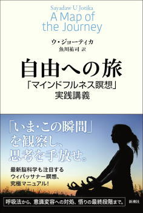
まず、本書を書店で手に取った読者は、五百五十ページを超えるボリュームに圧倒されるだろう。だが、本書が大部なのには正当な理由がある。
それは、本書が「まったく瞑想やマインドフルネスに予備知識を持たない」読者でも、他の瞑想解説書を必要とせず、この一冊だけでウィパッサナー瞑想をつつがなく実践できるよう配慮した上で執筆されているからである。
そのため、本書の冒頭約百五十ページは、ウィパッサナー瞑想に取り組む以前の心構えや、実際に瞑想実践をする上での技法の解説となっている。
しかしながら、本書は単なるウィパッサナー瞑想の入門者向けのマニュアルなどではない。冒頭約百五十ページでウィパッサナー瞑想実践の基礎について説明した後、本書はウィパッサナー瞑想実践によって得られる、十三に及ぶ洞察智の詳細な解説に入る。
十三の洞察智とは、
①名色分離智（名と色が、別々のものであるとはっきりと知る智慧のこと）
②縁摂受智（正しい因縁を知り、理解する智慧のこと）
③思惟智（現象とは無常・苦・無我なものであると理解する智慧のこと）
④生滅智（あらゆる現象は生じては滅すると理解する智慧のこと）
⑤壊滅智（あらゆる現象は滅すると理解する智慧のこと）
⑥怖畏智（あらゆる現象は恐ろしいものであると理解する智慧のこと）
⑦過患智（あらゆる現象の欠点を理解する智慧のこと）
⑧厭離智（あらゆる現象は厭離すべき対象であると理解する智慧のこと）
⑨脱欲智（現象の世界とは脱するべきものであると理解する智慧のこと）
⑩省察智（これまで生じた智慧を振り返り、再確認する智慧のこと）
⑪行捨智（平静な心で現象を観察できる智慧のこと）
⑫種姓智（家系を断ち切る智慧のこと）
のことである。
これらの智慧について解説した日本語の本は、管見の限りではマハーシ・サヤドーの『ミャンマーの瞑想』と、アルボムッレ・スマナサーラの『ブッダの実践心理学』だけであろう。しかも、本書の洞察智に関する記述の量は、前掲書を遥に超えるものであり、かつ詳細なものである。
前訳書『ゆるす』に続き、魚川の翻訳は見事であり、英語版原書のみならず、ミャンマー語版をも参照する丁寧さで仕上げられている。
本書は、独学でウィパッサナー瞑想を実践する瞑想者にとって、最良のガイドとなる本のうちの一冊と言えるであろう。
『ゴエンカ氏のヴィパッサナー瞑想入門』
ウィリアム・ハート（太田陽太郎訳）
（春秋社、一九九九年）
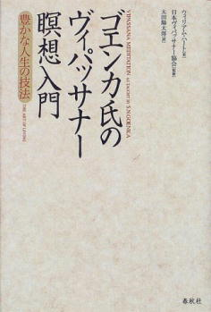
本書は、サティヤ・ナラヤン・ゴエンカによる法話を、カナダ人の弟子であるウィリアム・ハートが編纂し、英文の著書として出版したものの邦訳である。
ゴエンカは、一九二四年生まれのインド系ミャンマー人。二〇一三年に九十歳で逝去している。彼は若くして実業家として成功するも、重い頭痛という持病に悩まされていた。三十代の頃、サヤジ・ウ・バキンの指導するヴィパッサナー瞑想の瞑想会に参加。当初は、頭痛の緩和に瞑想が役に立つのではと思っており、ウ・バキンにそれを質問すると、「ヴィパッサナー瞑想に、病気の治療などという効果はない」と否定され落胆するも、瞑想そのものが楽しくなり、精力的に修行を続けることとなる。
一九六六年にウ・バキンから正式に瞑想指導者として認められると、インドに移住。瞑想指導者としての人生を歩み始める。ゴエンカの指導力、また組織作りの才は際立ったものであり、組織はみるみる巨大化。現在では、世界百二十箇所に常設の瞑想センターを持つ、世界でも屈指の瞑想団体となる。
そうした世界各地の瞑想センターでは、ゴエンカに任命された指導者が瞑想指導に当たっているが、本書の著者であるウィリアム・ハートもそうした指導者の一人。ゴエンカの指導する瞑想は、アーナパーナ・サティを基本とするものに独自の工夫を加えたものだが、瞑想指導者の資格を持つハートはそうした部分をよく咀嚼し、文章化することに成功している。
また、本文には瞑想実践者とゴエンカとの質疑応答の部分も多く収録されており、瞑想実践者の具体的な悩みに役立つヒントも満載だ。表現も分かりやすく、一九九九年に刊行以来、十五年以上ロングセラーとなっているのも頷ける。
アーナパーナ・サティを実践している修行者なら、読んでみて損はない一冊だろう。
『ヴィパッサナー瞑想』
マハーシ・サヤドー（星飛雄馬訳）
（サンガ、二〇一七年）
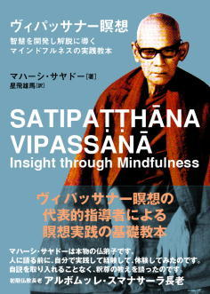
本書は、Mahāsi Sayādaw, Satipaṭṭhāna Vipassnā Insight through Mindfulness, Buddhist Publication Society,1990 を翻訳したもの。これは、著者のマハーシ・サヤドーによるビルマ語の原著を、マハーシ・サヤドーの在家の弟子であったウ・ペ・ティンが一九五七年、英語に翻訳したものである。
マハーシ・サヤドーは、近代における最も著名な瞑想指導者の一人であり、ヴィパッサナー瞑想再興の立役者である。一九〇四年、ミャンマーに生まれる。十二歳で沙弥出家をし、二十歳で比丘となる。はやくから、彼は自分を学僧であると見做し、出家して五年の後には、モールメインにある僧院で仏教経典を講ずるほどであった。
比丘になって八年後、マハーシ・サヤドーは明快で効果的な瞑想実践法を求め、モールメインを去った。そして、タトンの地において、マハーシ・サヤドーはミングン・ジェータワナ・サヤドーとして知られる高名な瞑想指導者、ウ・ナーラダ長老と出会った。そして、マハーシ・サヤドーはミングン・ジェータワナ・サヤドーのもとで、ヴィパッサナー瞑想の集中的な指導を受けた。
一九四一年、マハーシ・サヤドーは故郷の村に戻ると、その地でヴィパッサナー瞑想実践の体系的な指導を始めた。比丘のみならず在家者も含め、多くの人々が実践を始め、マハーシ・サヤドーの注意深い指導により、大いに進歩をした。
一九四九年十一月十日、ウー・ヌ首相（ビルマ）と、ブッダ・サーサナーヌッガハ協会理事長のタドウ・シリ・スダンマ・ウ・トゥウィン氏の個人的な要請より、マハーシ・サヤドーはシュエボーからラングーン（現在のヤンゴン）にやってきた。そして、同年十二月四日には、ラングーンのハーミテージ・ロードに瞑想センターが正式に開基され、当日集まった十五人の在家信徒を対象に、マハーシ長老はヴィパッサナー瞑想の正しい実践方法による瞑想指導を始めた。
瞑想センターがオープンした初日から、瞑想センターを訪れ、集中的な瞑想指導を受ける在家信徒たちのグループに対し、ほとんど毎日、ヴィパッサナーの目的、その実践方法、実践をすることによって得られる恩恵などについての詳しい説明を含んだ法話がなされた。この初心者向けの瞑想指導の法話は、一回九十分程度でほとんど毎日行なわれ、その対応はマハーシ・サヤドーにとっても負担となっていた。この状況を改善するため、ブッダ・サーサナーヌッガハ協会は瞑想センターに対して、一台のテープレコーダーをお布施することにした。そして、一九五一年七月二十七日、当日瞑想センターに集まった十五人の在家信徒に対して、初めてマハーシ・サヤドー自身に代わり、サヤドーがテープに吹き込まれた法話を聞くことによる初心者瞑想指導が行なわれた。それ以来、このテープによる法話は、変わらず毎日、初めて瞑想センターを訪れた初心者に対して、予備知識を与えるためのものとして活用されている。
このテープによる初心者向けの法話は好評で、やがて書籍化への要望が高まってきた。そうして初めはビルマ語版が出版され、後にウ・ペ・ティンによって英訳された。それが、本書の原書である『Satipaṭṭhāna Vipassnā Insight through Mindfulness』である。
先述したような経緯があるため、本書は初めてヴィパッサナー瞑想に取り組む入門者に向けて説かれたものであり、その意味では入門書と言えるが、あくまで法話の対象者はミャンマー人。巻末に用語解説が備えられているが、法話の中ではパーリ語の用語も頻出する。仏教瞑想に関心を持った読者が最初の一冊として手に取るには、少々ハードルが高いかもしれない。
しかし、現在世界中で実践されている「マハーシ式」のヴィパッサナー瞑想の考案者ともいえる著者の法話は迫力と説得力を伴ったものだ。特に「マハーシ式」のヴィパッサナー瞑想の実践者なら、一度は読んでみたい一冊と言えるだろう。
『ミャンマーの瞑想 ウィパッサナー観法』
マハーシ長老（ウ・ウィジャナンダー大僧正訳）
（アルマット、二〇一一年）
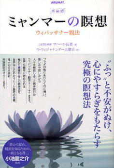
同じマハーシ・サヤドーの著作でも、『ヴィパッサナー瞑想』が入門者向けとすれば、この『ミャンマーの瞑想』は中級者向けの本だ。第二章でヴィパッサナー瞑想のやり方について簡単に触れられているものの、第三章では名色分離智という、高度な智慧を獲得するための方法について語られている。
名色分離智は、十種類のヴィパッサナー智を得るための前提となる大切な智慧である。ヴィパッサナー智とは、
①思惟智
②生滅智
③壊滅智
④怖畏智
⑤過患智
⑥厭離智
⑦脱欲智
⑧省察智
⑨行捨智
⑩随順智
の十種類からなり、本書の第五章から第七章では、それらの智慧を得るための方法が詳述されている。そしてさらに、第八章では涅槃に達し、阿羅漢果を得るための方法が説明され、テーラワーダ仏教の修行の階梯のすべてが、本書で解説されているといってもよい。
「マハーシ式」のヴィパッサナー瞑想の実践者なら、先述した『ヴィパッサナー瞑想』と併せ必携の一書となる本だ。
『慈しみの思考』
サヤドー・ヤウェイヌエ（平井和維訳）
（あたま出版、二〇一六年）
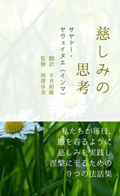
ミャンマーの著名な僧侶である、サヤドー・ヤウェイヌエによる法話集。
主に慈悲をテーマとして、様々な角度から仏法が説かれる。本書で特に感心したのは、慈悲の瞑想をする際に多くの人が疑問に思う、
「最初に、『私が幸せでありますように』と念じるのは、エゴでは？」
という疑問に清浄道論を引用しながらサヤドー・ヤウェイヌエが大変明確に回答している部分である。
「自分自身にまず慈しみを送るとなると、利己的ではないでしょうか？」
清浄道論に、これに対する回答が簡潔に記されています。
「同情する気持ちが起きるようにするためです。」
ここで「同情する気持ち」について、少し詳しく説明します。
「私は悩み苦しみがなくなることを望んでいる。同様に、他の人たちも悩み苦しみがなくなることを望んでいるはずだ。」
「私は平和でいたいし、他の人たちも平和でいたいはずだ。」
「自分が誰かに侮辱されたら嫌だし、他の人たちも侮辱されたくないはずだ。」
（中略）
このような同情心が育めるように、そして同情する気持ちが起きるように、自分を最初に念じるということです。
ミャンマー語に堪能な平井和維の訳文は読みやすく、またミャンマーで十年以上比丘出家をしていた西澤卓美が監修しているだけあり、仏教教理の内容の精確さには信頼がおける。
本文に添えられているイラストは可愛らしく心和むものであり、表紙のデザインも大変上品で、本文の内容によくマッチしている。
第四章 スリランカ仏教
『マインドフルネス』
バンテ・ヘーネポラ・グナラタナ（出村佳子訳）
（サンガ、二〇一二年）
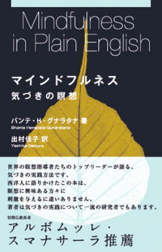
本書の著者のグナラタナは、スリランカ出身のテーラワーダ仏教僧。一九六〇年代以降、アメリカを拠点に活動をしている。アメリカの大学で博士号も取得しており、英語も堪能。本書は大変分かりやすい英語でテーラワーダ仏教の瞑想が解説されているが、そこにもグナラタナの語学力が如何なく発揮されている。
この『マインドフルネス』は出版されて以来、長らく英語圏でテーラワーダ仏教を本によって独習しようと試みる瞑想実践者たちにとって、ブッダダーサの『呼吸によるマインドフルネス』と並び、二大ロングセラーとなってきた。
近年、北米でも瞑想センターをはじめ、テーラワーダ仏教の瞑想を学べる場が増えてきてはいるが、そうした場はまだまだ限られるのが現状だ。そのような環境で、瞑想に関心を持った人々にとっての導きとなる情報は、おのずと本からとなる。その点、本書『マインドフルネス』は、瞑想に対して予備知識を持たない初心者でも、きちんと書籍の中のインストラクションに従っていけば、一歩一歩瞑想実践に習熟できるような構成となっている。
第二章の「ヴィパッサナー瞑想ではないもの」は、世間に多くある瞑想と、テーラワーダ仏教の瞑想がどう違うのかを理解する上で、最良の文章の一つ。また、第四章の「心の姿勢」では、瞑想に取り組む際の姿勢についてきめ細やかに解説。「何も期待しない」「無理しすぎない」「手放す」「比べない」などのポイントごとに別れたアドバイスは、テーラワーダ仏教の瞑想に取り組む人々のみならず、坐禅などを実践している人々にも有益な情報となるであろう。
さらに、第六章では瞑想をする際の適当な服装や、足を組んで座るのが困難な人のための椅子を使った瞑想法も紹介。第十章の「問題に対処する」では、身体の痛みや、しびれ、眠気など、瞑想中に起こるであろう諸問題への対処法についても、かゆいところに手の届くようなアドバイスが与えられている。
本書は、独りで瞑想実践に取り組む読者にとって、共に併走し、有益なアドバイスを与えてくれるアドバイザーのような一冊だ。
『マインドフルネスを越えて』
バンテ・ヘーネポラ・グナラタナ（出村佳子訳）
（サンガ、二〇一三年）
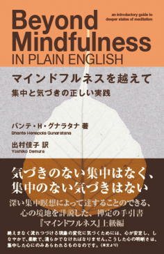
『マインドフルネス』の続編となる一冊。『マインドフルネス』では主にヴィパッサナー瞑想が取り上げられていたが、本書のテーマはサマタ瞑想である。
本書の中でグナラタナが指摘しているように、テーラワーダ仏教においてサマタとヴィパッサナーは主従関係というよりは、修行の両輪となるものである。よって、全ての瞑想実践者にとって、サマタ瞑想に関する正しい知識を持ち、実践に活用することは有用なことであると言える。
本書では、アーナパーナ・サティの実践により集中力を高め、第一禅定から第四禅定までの色界禅定、そして第五禅定から第八禅定までの無色界禅定といった極めて高度な禅定まで、ステップ・バイ・ステップでどのようにそのような禅定状態に入ればいいのか懇切丁寧に解説されている。
だが、いくら本の中で丁寧に解説されているからといって、それらの高度な瞑想を実践するには、熱意と、継続した修行が求められる。そのため、本書の対象となる読者は『マインドフルネス』を読み、ある程度瞑想実践に習熟した者か、あるいは瞑想指導者などにつき、瞑想に関する基礎的な修行を終えた者ということになるだろう。
そのため、本書の主要な読者は中級以上の瞑想実践者ということになるだろうが、そのような修行者にとって、本書は瞑想実践のためのヒントの宝庫となることは間違いないであろう。
『８マインドフル・ステップス』
バンテ・ヘーネポラ・グナラタナ（出村佳子訳）
（サンガ、二〇一四年）
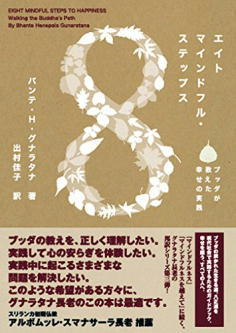
ブッダが説いた悟りへと至る道が、八正道である。八正道は次の八つからなる。
①正見【正しい見解（sammā-diṭṭhi）】
②正思惟【正しい思考（sammā-sankappa）】
③正語【正しい言葉遣い（sammā-vācā）】
④正業【正しい行動（sammā-kammanta）】
⑤正命【正しい仕事（sammā-ājiva）】
⑥正精進【正しい努力（sammā-vāyama）】
⑦正念【正しい気づき（sammā-sati）】
⑧正定【正しい集中（sammā-samādhi）】
グナラタナの前著である『マインドフルネス』と『マインドフルネスを越えて』はこの八つのうち、⑦正念（sammā-sati）と⑧正定（sammā-samādhi）に絞って解説をしたものだが、本書ではそれら二つを含め、他の六つの道についても詳細な解説を試みたものである。
『マインドフルネス』などの作品にも表れているように、グナラタナの著作の美点は、大変具体的なことである。例えば、③正語（sammā-vācā）の実践法の解説でも、空理空論に陥ることなく、正語の実践とは、「真実を話すこと」「悪口を言わないこと」「粗暴な言葉を使わないこと」「うわさ話をしないこと」の四つと大変分かりやすい。そして、それらの項目を説明する際にも、自分の体験談や経典の言葉を自在に引用し、誰もが正語とは何かを理解し、実践できるよう促すものとなっている。
また、近年ネット上などで、「悟り」に関する議論が喧しく起こっている。そんな議論に喝を入れるようなさわやかな言葉が、本書の末尾に掲げられている。
ときどき、「覚り」を嘲笑する人たちがいるようです。インターネットでブッダの教えについていろいろ書き、覚りを軽蔑したり、ときには怒りや冒とくする言葉を使っているのです。このような人たちは、覚りとはどのようなものかを知らないのでしょう。
覚りとは、欲や怒り、無知から生まれる苦しみの火が消えた状態のことです。出生、成長、老衰、死、悲しみ、嘆き、苦悩、絶望の火が、きれいに消えることなのです。
もしかすると覚りを嘲笑している人たちは、この火が消えると絶望の冷たい暗闇におちいり、生きがいをすっかり失ってしまうのではないか、それが怖い、と思っているのかもしれません。あるいは、苦しみの火を、文明の火や電気の明かりのようなものと混同しているのかもしれません。
（中略）
欲、怒り、無知、出生、成長、老衰、死、悲しみ、嘆き、苦悩、絶望の火が消えたとき、そこにあらわれるのは、完全なやすらぎや落ち着き、静寂です。言葉ではあらわすことのできない究極の幸せがあらわれるのです。このとき、心と感覚は完全に明晰になり、純粋で、エネルギッシュになります。「覚り」とは、内面の光であり、精神の輝きであり、心のあたたかさなのです。
（中略）
覚りとは、私たちが追い求めているような境地ではありません。欲がすべて消えたときにあらわれるやすらぎの境地なのです。
他に類を見ないような、明晰な「悟り」の記述である。本書を読み進めるうちに、読者はグナラタナに誘われながら、知らず知らずのうちに悟りの境地へと導かれていくことであろう。
『ブッダの聖地』
アルボムッレ・スマナサーラ
（サンガ、二〇一二年）
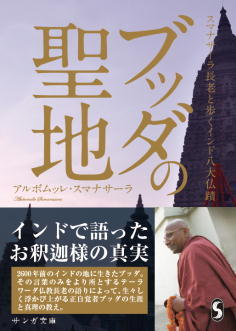
アルボムッレ・スマナサーラによる、インド八大仏蹟のガイドブック。仏教徒にとって聖地とされている仏蹟とは、
①ルンビニー
②ブッダガヤー
③サールナート
④ラージャガハ
⑤サヘート・マヘート
⑥サンカッサ
⑦ヴェーサーリ
⑧クシナーラー
の八つである。ブッダ出生の地、ルンビニー。成道の地、ブッダガヤー。そして、入滅の地であるクシナーラーを含む八大聖地が、豊富で美しい写真と共に紹介されている。
また、スマナサーラと言えば、日本におけるその旺盛な伝道活動の実績から、「テーラワーダ原理主義」的な思考の持ち主と見做されがちだが、本書を読むと彼がテーラワーダの教義に対して極めて柔軟な知性の持ち主であることが分かる。
本書の中でスマナサーラは、仏教徒に馴染みのある「四門出遊」のエピソードは創作であると断言する。四門出遊とは、シッダッタ王子があるとき街に出て、老人の姿を見、「人は必ず老い、そして死にゆく運命にある」と理解し、出家を決意するという話である。しかし、スマナサーラはシッダッタ王子が出家を決意する年齢に至るまで宮廷内で老人を見かけなかったなどということは考えにくく、このエピソードは創作に違いないと述べるのである。
また、近年日本の一部の仏教研究者が主張する、「ブッダの息子ラーフラの名前の意味は、悪魔である」という説も間違いであると断ずる。ラーフラとは「悪魔」を意味するものではなく、「束縛するもの」という意味だというのだ。この場合、「束縛」とはもちろん出家をすることに対しての束縛という意味である。
本書はこれ以外にも、日本の仏教界で通説と考えられている説に対する多くの説得力ある異論が含まれている。美しい写真と共に、仏伝も学ぶことができる、お得な一冊だ。
第五章 ベトナム仏教
『ブッダの〈気づき〉の瞑想』
ティク・ナット・ハン（山端法玄、島田啓介訳）
（新泉社、二〇一一年）
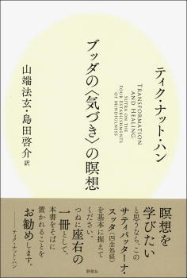
ティク・ナット・ハン（Thich Nhat Hanh）によるサティパッターナ・スッタ（念処経）をテーマにした法話『Transformation and Healing』の邦訳。
ティク・ナット・ハンは、一九二六年、ベトナム中部のフエ（順化）生まれの禅僧にして詩人、平和運動家である。十六歳のとき、臨済正宗柳館派でフエにあるトゥヒゥ（慈孝）寺で出家。若い頃より聡明であり、プリンストン大学やコロンビア大学でも学んだ。
一九五〇年代、ベトナムのゴ・ディン・ジエムは不正選挙を利用してベトナム共和国を樹立し、初代大統領に就任。カトリック教徒のゴ・ディン・ジエムは、仏教徒を中心とした反政府運動を厳しく弾圧。これに対し、僧侶のティク・クアン・ドック（釈廣德）は抗議の焼身自殺を行なった。このティック・クアン・ドックの焼身を、ゴ・ディン・ジエムの弟の妻であるマダム・ヌーは「坊主のバーベキュー」と評した。このことは国内外の人々の大きな反感を買い、ついにゴ・ディン・ジエム政権は崩壊した。
ゴ・ディン・ジエム政権崩壊後、ティク・ナット・ハンはアメリカからベトナムに帰国。ベトナムで初めて西欧式に組織された仏教大学である、ヴァン・ハン（万行）仏教大学の設立に参画し、社会学部長を務めた。また、社会福祉青年学校（ＳＹＳＳ）を創設し、その校長も兼ねた。社会福祉青年学校は千人以上の規模で、ベトナム戦争によって爆撃を受けた村を再建し、学校や病院を建設、戦災家族の援助など、粘り強い活動を続けた。
一九六六年、ティク・ナット・ハンは「平和のための提案（A Proposal for Peace）」を携え渡米。コーネル大学で「ベトナムの仏教復興運動」について講義。ロバート・マクナマラ長官、マーティン・ルーサー・キング・ジュニア牧師などと会見、ベトナム戦争の終結を主張。ティク・ナット・ハンの勇気ある行動に感銘を受けたキング牧師は、彼をノーベル平和賞に推薦した。
その後、ティク・ナット・ハンは米国友和会（ＦＯＲ）とベトナム良心国際委員会（ＩＣＣＶ）の斡旋で欧米を訪問。ベトナムの平和を訴える講演を続ける。だが、仏教徒による中立政権の樹立を主張するティク・ナット・ハンは、帰国すれば投獄の危険にさらされることになり、フランスへ亡命することとなる。七十年代には、ベトナム戦争終結のためのパリ平和会議に、ベトナム仏教徒主席代表として参加。現在はフランスにある仏教共同体、プラム・ヴィレッジ（すもも村）を拠点として、瞑想合宿の指導や著述、世界中の難民支援の活動に従事している。
基本的に禅僧であるティク・ナット・ハンだが、実践指導においてはテーラワーダ仏教で重視される「マインドフルネス（パーリ語のサティを英訳したもの）」をその教えの柱としている。ティク・ナット・ハンによるマインドフルネス実践の教えは明晰なものであり、その教えは広く英米圏で受け入れられ、現在の世界的な「マインドフルネス・ブーム」の立役者の一人と言える。
本書は、パーリ経典でもマインドフルネス（サティ）の実践について最も詳述されているサティパッターナ・スッタの解説書である。本書の読み方としては、まず冒頭の「〈気づき〉とは」と終わりにある「〈気づき〉の瞑想のポイント」を読み、「マインドフルネスとは何か？」ということを理解することをおすすめする。
その上で、身（カーヤ）・受（ヴェーダナー）・心（チッタ）・法（ダンマ）の四つの念処（マインドフルネスの対象）の観察の仕方を、個別のエクササイズで学べば、実践はスムーズにいくと思われる。
本文にはサティパッターナ・スッタの全訳も含まれ、また付録では経典成立の歴史と、三種の訳本についての解説もある。このことからも、いかに、ティク・ナット・ハンがサティパッターナ・スッタを重要な経典あると考えているかが伝わってくる。
『ブッダの〈呼吸〉の瞑想』
ティク・ナット・ハン（島田啓介訳）
（新泉社、二〇一二年）
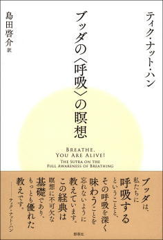
本書の訳者である島田啓介によれば、ティク・ナット・ハンは仏道修行における重要経典として、サティパッターナ・スッタ（邦訳『ブッダの〈気づき〉の瞑想』）、バッデーカラッタ・スッタ（邦訳『ブッダの〈今を生きる〉瞑想』）、アーナパーナ・サティ・スッタの三つを挙げているという。その、アーナパーナ・サティ・スッタの邦訳およびティク・ナット・ハンによる解説が、本書『ブッダの〈呼吸〉の瞑想』である。
ベトナム臨済正宗の僧侶であるティク・ナット・ハンが仏道修行上の最重要経典として、テーラワーダ仏教のパーリ経典である上記の三つの経典を挙げているのが興味深いが、ベトナムの仏教はその地理的な性質もあり、以前からテーラワーダ仏教、大乗仏教双方の影響が強い土地柄だという。ティク・ナット・ハンが自身の修行体系にテーラワーダの行法を取り入れているのも、そうした背景があってのことだろう。
本書『ブッダの〈呼吸〉の瞑想』の原書は一九九〇年に刊行され、ブッダダーサの『呼吸によるマインドフルネス』と共に、英米圏にアーナパーナ・サティ・スッタとその瞑想法を紹介するのに大きく貢献した。
本書のアーナパーナ・サティ・スッタの解説は極めてシンプルで、アーナパーナ・サティの十六のステップを一つ一つ丁寧に解説していく。そして、その後の節では経典の内容に従って、アーナパーナ・サティの確立が四念処の確立を導き、四念処の確立が七覚支の確立を導くことをやさしく説く。
そうして経典を詳細に解説した後で、「日常のなかで生かせる七つの瞑想法」として、アーナパーナ・サティを日常生活の中で応用するための七つのエクササイズが紹介されている。
また、本書にはアーナパーナ・サティ・スッタの全訳が収録された上で、付録として経典成立の歴史についても触れられ、それを読むとアーナパーナ・サティ・スッタがベトナムで広まったのは、なんと三世紀初頭にまで遡ることが分かる。このような、丁寧で行き届いた編集も、本書の魅力の一つである。
第六章 アメリカ仏教
『呼吸による癒し』
ラリー・ローゼンバーグ（井上ウィマラ訳）
（春秋社、二〇〇一年）
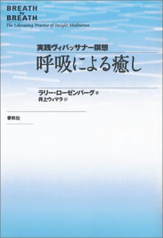
アメリカの在家瞑想指導者、ラリー・ローゼンバーグによる、アーナパーナ・サティの解説書。ローゼンバーグのアーナパーナ・サティの師はブッダダーサになるため、瞑想指導の基本はブッダダーサの教えをベースとしたものとなっている。しかし、ローゼンバーグはブッダダーサ以外にも、アチャン・マハーブーワの下で修行をした経験もあり、そのときマハーブーワから与えられたアドバイスなども収録されており、本書の内容をより豊かなものとしている。
また、そうした直接の師以外でも、アチャン・チャーの言葉や禅の語録などが本書の中で縦横無尽に引用されているが、それらの箴言が単なる言葉の羅列ではなく、ローゼンバーグ自身の修行のなかで腹に落ちたものとして語られているため、違和感なく読者の頭に入ってくるようになっている。
巻末にはアーナパーナ・サティ・スッタの訳や丁寧な用語解説も完備され、読者の修行の役に立つようになっている。アーナパーナ・サティの修行者なら、一度は読んでおきたい本だ。
第七章 チベット仏教
『サンガジャパンVol.24』
永沢哲監修
（サンガ、二〇一六年）
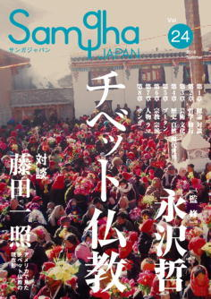
『サンガジャパン』は通常は雑誌という体裁だが、今号はほとんどまるまる一冊、チベット仏教を総力特集する形になっている。
執筆者は日本のチベット仏教界を支えてきた錚々たるメンバーで、ボリュームも充実の七百五十ページ越え。
本書は全八章から成るが、チベット仏教に普段から親しんでいる人はどのページから読み始めてもいいだろう。その一方で、私も含めチベット仏教の門外漢は第一章の曹洞宗僧侶、藤田一照と本書の監修者である永沢哲の対談から読み始めるのがおすすめだ。
そして、その後に日本滞在四十年を超えるチベット仏教僧、ニチャン・リンポチェのインタビューを読むと、チベット仏教の現在の大枠がつかめるだろう。
その後は読む事典的にどの章から読んでもいいと思うが、特筆すべきは第七章の人物事典と、第八章のサンガ（実践グループ）の紹介の記事だろう。
特に各サンガの紹介は、丁寧な取材やインタビューによって構成されており、今後日本でチベット仏教を学んでみたいと思っている人々にとって、大変親切なガイドとなっている。
とにかく圧倒的なボリュームで、これをまとめあげた監修者、寄稿者、編集者の努力には頭が下がる。
チベット仏教に関心を持ったら、まず初めに手に取るべき一冊と言えるだろう。
『チベット密教』
ツルティム・ケサン、正木晃
（筑摩書房、二〇〇八年）
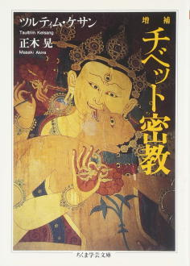
仏教研究者のツルティム・ケサンと正木晃による、チベット仏教の概説書。著者の一人である正木は、本書の執筆意図の一つにオウム真理教による一連の事件がきっかけとしてあると触れ、こう語っている。
また、私たち自身が、オウム真理教の信者や元信者と話をしてみて、おもい知らされることがあった。チベット密教に関する彼らの知識に、極端な偏りがあるのだ。彼らはチベット密教の修行法やそこから生じるとされる神秘体験について、詳しい情報をもっていた。とくに瞑想法に関する知識はかなりのレベルに達し、なかには「瞑想オタク」とよんでもいいほどの信者すらいた。
しかしながら、その反面、チベット密教の歴史ついてはまったく知識がないといっていいほどであった。さらにいえば、密教を学ぶにあたり、必須の前提となる顕教、つまり密教以外の一般仏教に関わる知識もまた、ほとんどもち合わせていなかった。
この正木の指摘は、限定的なものとはいえ、正鵠を射たものだと言えるだろう。オウム真理教の信者達が仏教教学の基本的な知識に欠ける傾向を持っていたことは間違いない。正木の指摘するように、仏教の修行者はただ瞑想だけをしていればいいのではなく、教学に対する、ある程度の基本的な知識が必要なのである。
その意味で、『サンガジャパンVol.24』を読んだ読者は、次に本書をぜひ手に取って欲しい。本書にはチベット仏教の歴史と、ゲルク、カギュー、サキャ、ニンマといった四大宗派の基本的な教えがコンパクトにまとめてある。そして、そのどれもがチベット仏教を学ぶ上で最低限の基礎知識といえるようなものなのである。
『チベットの先生』
中沢新一
（KADOKAWA、二〇一五年）
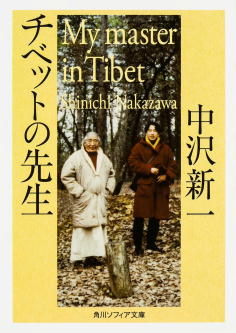
本書は、ケツン・サンポ・リンポチェのチベット語で書かれた自伝『ケツン・トクジュ』に中沢新一が直接インタビューした口頭によるコメントを補い、一冊の本としてまとめたものである。
二十世紀初頭にチベットに生まれたケツン・リンポチェは、『サンガジャパンVol.24』の人物名鑑に登場するような伝説的な僧侶や行者の数多くに師事している。その中には伝説の女性ヨーガ行者であるシュクセプ・ジェツンマ（彼女は、ニチャン・リンポチェの師でもある）や、埋蔵宝発掘者、ジグデル・イェシェ・ドルジェなども含まれる。
本書の前半では、こうした素晴らしい導師たちの下での、ケツン・リンポチェの修行の日々が明るいタッチで描かれるが、一九五九年に中国がチベットに侵攻して以降の描写は、一転して悲惨極まるものとなる。そして、歴史の大きな流れの中で翻弄されるケツン・リンポチェは、最愛の妻子とも永遠に生き別れての亡命生活に入ることになってしまうのである。
だが、本書の中でケツン・リンポチェが指摘するように、中国の侵略のため、世界中に亡命を余儀なくされたラマたちのおかげで、チベット仏教の種子が世界中に蒔かれ、いまやチベット仏教は世界中に広まるものとなった。本書を読むことによって、強大な軍事力にも負けず、かえってそれを飛躍のチャンスと変えたチベット仏教のたくましさと、チベット人の心の強さを読者は知ることになるだろう。
第八章 中国仏教
『無の探求「中国禅」』
柳田聖山、梅原猛
（KADOKAWA、一九九七年）
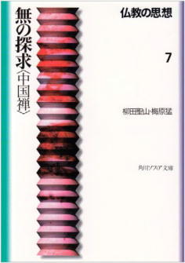
本書の元となった本は、一九六九年出版と古く、最新の中国仏教研究の成果は反映されていないが、それでも手軽な値段で入手できる中国仏教の入門書としては、現在でも価値ある一冊。
本書に限らず、KADOKAWAの「仏教の思想」シリーズ全てに言える傾向だが、まず第二部の対談のパートを読み、その巻における二人の著者の問題意識を理解してから、第一部を読むと、より理解が深まるような構成となっている。
本書の中で柳田は、日本人が禅というとよくイメージする『無門関』や『十牛図』といった本が、中国ではほとんど読まれていないことを指摘する。そして、一般的に中国禅思想史は禅が隆盛を誇った唐代を中心に語られるが、それ以前のインド仏教からの流れで考えることの大切さを強調する。
インドから中国に仏教が渡来する際、クマーラジーヴァらによって本格的に仏典の翻訳が始まる前に中国語に翻訳された経典群の中には、『安般守意経』が含まれていた。二世紀の中ごろのことである。これは、パーリ経典のアーナパーナ・サティ・スッタの翻訳であり、中国に仏教が渡った最初期の段階から、中国仏教徒が教理に劣らぬほど瞑想の技法そのものに深く関心を寄せていたことを示している。
さらに、そのクマーラジーヴァに関しても、興味深い記述がある。『金剛般若経』の中の言葉で、現在の禅宗でも重要な禅語として頻繁に引用される「応無所住而生其心」だが、この言葉はサンスクリット語原文には存在しないというのだ。
これ以外にも、臨済、曹洞を問わず、現代の日本で禅を学んでいるものなら、最低限知っておくべき知識が数多く記載されている。一度は眼を通しておくべき書物と言えるだろう。
『『臨済録』 禅の語録のことばと思想』
小川隆
（岩波書店、二〇〇八年）
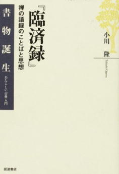
日本を代表する禅仏教の研究家、小川隆による臨済録の解説書。
「禅問答」という言葉が、非論理的であったり、結論の出ないようなやりとりを指す言葉となっているように、一般的に禅の語録とは難しい、意味の分からないものと見做されがちである。
だが、小川はそれは宋代に隆盛を誇った公案禅の影響であるとする。小川は、議論を分かりやすくするため、公案禅を二種類のものに分ける。
文字禅 寸評をつけたり、その趣旨を詩に詠んだり、散文で論評を加えたりすることによって、公案の批評や再解釈を行うもの。
看話禅 特定の「公案」に全意識を集中することによって意識を臨界点まで追い詰め、そこで意識の爆発をおこし、言語・論理を越えた劇的な「大悟」の体験を得させようとするもの。
小川によれば、世間一般の「禅問答」のイメージは看話禅の影響で形作られたものであるという。看話禅の公案は、元々、矛盾をはらんだ非論理的な命題に意識を集中させるためのものなので、議論が噛みあっていなくても、不思議はないわけである。
だが、話はそこで終わらない。そうした宋代の看話禅に活用された公案の多くは、唐代の禅語録をベースとしたものである。それを踏まえた上で、唐代の禅語録を読み直してみると、そこで展開される問答は、まったく非論理的なものではなく、首尾一貫したものであり、かつ明快な議論がおこなわれていたことが分かる。
本書は二十一世紀に入ってからの最新の禅の学術研究の知見も反映され、大変読み応えのあるものとなっている。禅仏教に関心のある読者には、ぜひおすすめしたい一冊だ。
第九章 日本仏教
『迷える者の禅修行』
ネルケ無方
（新潮社、二〇一一年）
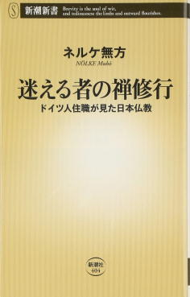
ドイツ出身で、現在は曹洞宗安泰寺住職を務めるネルケ無方の半自伝的著作。
日本の寺院の住職の大半が、寺の跡継ぎとして生まれ、生家の寺院の跡取りとなっているのに対して、一般のドイツの家庭の出身で、あえて自分の人生の選択として禅寺の住職という道を選んだ著者の精神的遍歴は興味深い。
だが、この本の最も衝撃的な部分は、日本の禅寺におけるいじめ、リンチ、拷問の実態を克明に暴露した部分にあるだろう。本書の中で、著者が臨済宗の寺院で修行をした際のエピソードとして、このようなものが紹介されている。
また、接心中に振る舞われる「うどん供養」というのが格段に厳しい。一人ずつ、金属製のボールにまず一杯のうどんが盛られます。「一杯」といっても、下の立場の人間になればなるほどその量が増えます。食べ終わると、やはりお代わりです。雲水は口が裂けても「もう結構です」と言えませんから、その場で吐いてしまう者もいます。吐いても許されるはずがありません。口から出た物を、胃袋に収めるまでは許してもらえません。それをしのぐコツはひとつ。いかにその場で我慢し、先輩が煙草を吸っている間にこっそり裏山で吐いてしまうか。
このような無理な食生活を続けていると、誰しも胃腸を壊します。胃腸が弱くなりトイレが近くなる。一時間ごと、いや三十分ごとに、「お願いいたします、二便往来お願いいたします」と先輩に低頭しなければなりません。先輩も事情が分かっていますので、大概は「おぅ、行ってき」と許してくれますが、忙しい時や機嫌の悪い時は「漏らせ」と言われることもあります。
こうして坐禅中に大便を漏らさないようにするために、臨済宗の雲水たちはオムツを着用しながら坐禅をしているそうである。これらの日常生活の描写を読むだけで、いかに禅寺での修行というものがナンセンスの極みかということが分かるが、その極めつけが著者が「恐怖の警策フルスイング」と呼ぶリンチである。
本来警策とは、坐禅中に居眠りなどしてしまう参禅者に対し、肩の部分を打つことにより、眠気などを醒ますために用いられるものだが、この臨済宗の修行寺院では、簡単に警策が折れないよう打撃部分に布テープをグルグル巻きにした上で、野球のバットを振る要領で雲水の胸をフルスイングで打ち抜くもの。当然、大怪我をする雲水も続出することとなる。
当初、そのような拷問に嫌悪感を抱いていた著者も、やがてはそうした環境に染まり、先輩僧として後輩僧に「警策フルスイング」を打ち込む立場となる。打たれていたときはあれほど嫌だったリンチも一旦「やる側」となってしまえば平気なもので、やがて著者は「ゲシュタポ」という不名誉なあだ名を僧堂内で付けられるまでに至る。
だが、そんな日々も長くは続かなかった。やがて著者は、自らが祖国ドイツで忌み嫌われるナチスと同じような存在に成り下がってしまったことに気づき、自ら僧堂を去ることとなるのである。
本書を読めば、現在の禅宗に幻滅すること間違いなしだが、美辞麗句で飾った偽りの僧堂描写ではなく、外国人というアウトサイダーの立場から、日本人という内部関係者には書きえなかったルポルタージュとして一級品の価値を持っている。
禅に関心を持つ全ての人に、初めに読んでもらいたい一冊だ。
『道元入門』
角田泰隆
（KADOKAWA、二〇一二年）
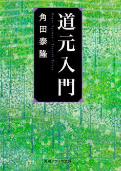
曹洞宗高祖、道元の伝記として、もっとも気軽に読める一冊。文章も平易で、特に何の予備知識も必要とせず、道元の一生を追うことができる。特に、道元が宋に渡ってからの、師である如浄とのやりとりの描写などは、小説を読むかのようにその情景が浮かんでくるようだ。
また、宋から帰国した道元が真っ先に著したのが『普勧坐禅儀』であるというのも興味深い事実である。道元の著作というと、ほとんどの人が『正法眼蔵』をイメージすると思うが、彼が当時の人々に何より先に伝えたいと思って執筆したものが『普勧坐禅儀』であるということは、それがいかに重要な著作であるかを示すものと言えるだろう。
なお、本書の第二章「道元の思想」及び、第三章「道元と現代」は道元自身の考えというより、著者である角田の解釈や思想が開陳されたものなので、第一章の伝記を読んだ後は、軽く読み飛ばしてもいいだろう。
『坐禅ひとすじ』
角田泰隆
（KADOKAWA、二〇〇八年）
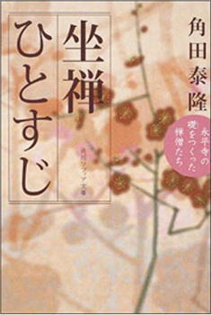
曹洞宗高祖、道元から四祖、瑩山までの時代を伝記的に描いた著作。著者の『道元入門』を読み終わった後に続けて読むと、黎明期の曹洞宗の息吹が伝わってくる構成となっている。
本書を読むと、現代の曹洞宗が開祖である道元の嫌っていたことをことごとく実行していることが分かる。一例を挙げてみよう。道元は、自分の教える仏法に宗名を付けることを嫌い、「禅宗」「曹洞宗」などと呼ぶことは許さなかった。しかし、四祖、瑩山の時代となり、規模も大きくなりつつあった組織を他の宗派と区別するため、あえて「曹洞宗」と名乗るようになったのである。
また、開祖である道元が開基したことから現在でも大本山として宗門から崇められている永平寺だが、『御遺言記録』などによれば永平寺は素晴らしい場所にあるものの、この寺そのものに執着してはならず、時代の要請とともにこの寺を守れないような状況になったら、その存在に固執してはならないとも戒めている。
さらに、現在では禅宗の代名詞のように思われている警策。これも、江戸時代頃に導入されたものであり、道元の説いた只管打坐とはまったく関係のない道具である。
このように、歴史を学ぶことによって、私たちが今日「道元禅」だと思っているものが、実はまったく本質からかけ離れたものだと気づくきっかけとなる。曹洞宗で参禅している者なら、読んでおいて損はない一冊だ。
『坐禅は心の安楽死』
横尾忠則
（平凡社刊、二〇一二年）
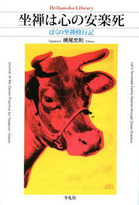
芸術家の横尾忠則が、井上義衍をはじめ川上雪担など昭和の名僧たちの教えに参じた記録。横尾の目線を通して、今は亡き名僧達の教えに私たちも触れられる。
参禅修行を始めるにあたって、横尾はまず、曹洞宗大本山の一つ、總持寺を訪れ、参禅をする。そして、当時總持寺で単頭老師をしていた板橋興宗に独参したところ、
「わしゃ、よう答えられませんわ、あなたの悩みに答えてくれるのは井上義衍老師（浜松、竜泉寺師家）以外にはおられません。紹介状を書きますからひとつお逢いになってみられたらいかがでしょう」
とアドバイスされ、井上義衍の下を訪れ、参禅するが、井上の説く法がなかなか腑に落ちず、その後も様々な僧侶の下を訪れ参禅をするという修行の旅が始まる。
本書で横尾が訪れたのは、大森曹玄、山田無文、川上雪担といった昭和の時代の高僧と言われる人物たちで、本書に描かれる横尾と彼らのやり取りを読むだけでも、そうした僧侶たちの人物像がうかがい知れ、貴重な資料となっている。
永平寺で受けた厳しい修行がきっかけで、横尾は坐禅にネガティブな印象を持ってしまい、後半はピラミッド・パワーなどオカルト趣味的なものや、ニューエイジ思想に惹かれていく展開となり、最終的には横尾は坐禅をやめてしまう。横尾のように、せっかく坐禅に興味を持ち仏縁が出来たものを禅堂から遠ざけてしまうような、警策の乱用や、不自然に厳しい修行の有り方などについても考えさせられる一冊である。
『禅 もう迷うことはない！』
井上義衍
（光雲社、一九九九年）
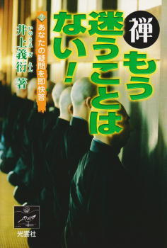
昭和の曹洞宗を代表する名僧、井上義衍の代表作の一つ。Ｑ＆Ａ方式で、約百四十問にもおよぶ質問に答えを与えている。質問数が多いため、質問の内容も、「宗教とは何か？」といった抽象的なものから、坐禅のときの有り様といったものまで多彩だ。
特に目を引くのは「悟り」について語った章で、これは実感を持って悟りについて語ることができる人のみが持つ、迫力に満ちている。
また、坐禅を実践していく上の疑問として、
・足が痛いときはどうすればよいか
・眠いときはどうすればよいか
・坐っていて、雑念が出てきたときはどうすればよいか
など、実践時にありがちな疑問に対しても、適切なアドバイスを与えてくれているのがありがたい。
さらに、「第六章 井上義衍老師のこれまでの歩み」は、井上義衍の自伝的内容の章で、師匠にあたる飯田欓隠との交流の様子や、大正期から昭和にかけての日本の禅会の様子が伝わってくる、貴重な資料となっている。
現在、入手困難となっているので、ぜひどこかの出版社で再刊してほしい一冊だ。
『井上義衍の禅話プロローグ』
井上義衍
（義衍提唱録刊行会、二〇一二年）
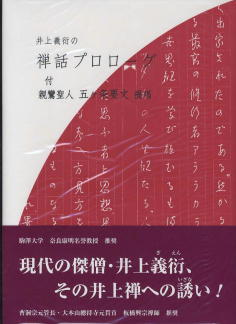
昭和の曹洞宗屈指の名僧と言われた井上義衍だが、その提唱は打掌を頻繁に用いるなど、聞く人によっては難しく感じられるものであった。本書は、そうした参禅者向けに、井上の用いる用語の意味を本人自身の言葉で分かりやすく解説したものである。
打掌の意味の他にも、キーワード集のように、「只管打坐」、「不思量底を思量する」「煩悩・妄想」「坐禅の要」「独参」といった用語の各項目を確認すると、井上がこうした言葉を曹洞宗で一般に使われている意味とはやや異なって使用していることが分かる。坐禅の指導を受ける際に、言葉の意味を正確に理解しておくことは大事なことであるため、そのような観点からも本書は有用なものであると言える。
井上義衍の本を読む際に、まずは眼を通しておきたい本書だが、取り扱いは主として紀伊国屋書店新宿本店に限られるため、入手する際は注意されたい。
『井上貫道老師提唱録』
井上貫道
（二〇一六年）
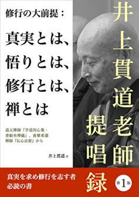
本書の著者、井上貫道は昭和の名僧と言われた井上義衍の息子。以前よりその著作の刊行が待望されていたが、私家版の本を除けばその著作が刊行されることはなかった。その意味で、待望の出版と言える。
本書の内容は、二〇一六年に行われた東山寺における攝心会での提唱録が中心となっている。提唱の教材としては、道元の『学道用心集』と『普勧坐禅儀』、そして黄檗希運の『伝心法要』が取り上げられている。
曹洞宗の僧侶が道元の著作を元に提唱するのは珍しくないと思うが、『臨済録』で知られる臨済義玄の師である黄檗希運の『伝心法要』が提唱のテーマとして取り上げられているのが興味深い。
東山寺での攝心は五日間おこなわれたため、二日目の途中までが『学道用心集』と『普勧坐禅儀』の提唱、それ以降が『伝心法要』の提唱となる。抜粋ではあるが、接心で使用したそれら原典についても、付録として収録されているのがありがたい。
本書の中で井上は、現在の曹洞宗の一部にある「悟りなどというものはない」「人は悟ることはできない」といった言説を一刀両断に切り捨てている。
「無所得無所悟」とかって言うようなことで、「何か得るものがあったらおかしい。だから悟るっていうことがあったら変だ」って言って、悟るなんていうことを非常に嫌う人がいる。仏法を知らない人の表現でしょう。どの仏祖方でも、悟らずに仏祖方になった人はひとりもいない。自分の本心に気付かずに、仏祖方になった人はひとりもいない。それだのに最近は、そういうことを平気で言う人がいる。「修行して悟ったなんて言ったら嘘だ、偽物だ。悟ることなんて絶対ないんだ」って。じゃあこのままで安心がいっているのかって言ったら、そんなことはないじゃないですか。必ずこのもので安心がいく時節があって、初めて「なるほど本当にそうなんだなあ。そうだったんだ」ということが、このもの【自分の体を指す】で自覚できる時があって、決着が着くのでしょう。そんなの当たり前の話です。
では、そうした悟りを明らめるために、私たちはどのように修行をすればよいのか？ その具体的な方法については、本書の第二部にあたる「坐禅のやり方」において、懇切丁寧な説明が与えられている。中でもとりわけ、「坐るときのあり方について」は、只管打坐をおこなう際の着眼点として大変参考になるので、熱心な参禅者にはぜひ読まれることをおすすめしたい。
『宝鏡三昧普説』
原田雪溪
（ペンハウス、二〇一四年）
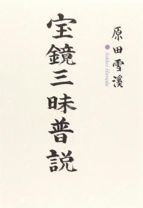
曹洞宗を代表する専門僧堂である発心寺の住職、原田雪溪の著書。内容は、発心寺の接心において、洞山良价の『宝鏡三昧』を提唱したもの。原田雪溪は一九五一年、原田雪水の下、発心寺で出家得度したが、その後、発心寺を一時離れ、龍泉寺の井上義衍の下に赴き、自らの修行に決着を付けた。そしてその後、発心寺に戻り、住職になったという経歴を持つ人物である。
『宝鏡三昧』は曹洞宗では『参同契』と並んで重視されるもののため、曹洞宗で参禅するものにとってその内容をこうした提唱録を通じて理解しておくことは重要であるが、接心での話を記録したものということもあり、本書は『宝鏡三昧』の解説に留まらず、原田の坐禅に対する考えが随所に開陳されており、その意味でも貴重な書物と言える。
昔、偉いお坊さんが不安や心配事のある良心的な人に向かって、「そのままでいいんだ。みんな仏性をもっているのだから、無理に悟りを求めて苦しむには及ばない」というようなことをいわれてまいりました。それで、ある宗門では今日のごとく無事禅的なもの、ただ形を整えて坐ればよろしい、というようになってまいりました。
ここで、「ある宗門」として原田に批判されているのは、現在の曹洞宗のことだろう。せっかく菩提心を持っても、正師の導きがなければ、なかなか修行の道を進めていくことはできない。まだ正師と巡り会っていない読者にとって、本書は坐禅をする際のアドバイスの宝庫といえるような本となるはずだ。
『雪担老師語録』
川上雪担
（東京図書出版会、二〇〇八年）
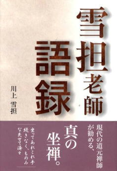
横尾忠則の『坐禅は心の安楽死』にも登場した曹洞宗僧侶、川上雪担の提唱を詩人の金石稔が編纂したもの。
川上は、東京大学を卒業後、高校教師をしていたが思うところがあり出家をしたという経歴の持ち主で原田雪溪と同じく、龍泉寺の井上義衍の下で修行を行い、自らの修行に決着を付けたという。龍泉寺での修行時期も、やはり原田と重なる部分がある。
川上の提唱の特徴は肩ひじを張らず、難解な仏教用語などもほとんど用いないもので、晩年はＳＮＳの「mixi」上で、全国の様々な人々を相手に対話し、教化していたというほど柔軟なスタイル。
本書では、そうした川上の膨大な提唱の中から、「般若心経」「信心銘」「普勧坐禅儀」の三つをピックアップ。それに、編纂者の金石が、提唱というほどまとまったものではないが、エッセイ的なものを「法語」、禅の言葉の解説的なものを「禅語」としてまとめている。
エッセイ的といっても、川上の言葉は、ダイレクトに法そのものを直撃するものばかりだ。「悟り」を否定するような近年の軽佻浮薄な仏教界に対する、川上の批判の言葉の刃は鋭い。
「サトリなんていらない度しがたい愚か者でいいんだ」
と云う、アイダミツオ式の人多いんですが、そりゃ世の風潮に迎合しているだけで、仏教には無関係です。困っているのは自分自身です、それを糊塗して、なんともまあどうしようもない世の中と、心身症めいて、だれもかれも困っています。
サトリなんていらないといって、悟りのなんたるかを知らない、度しがたい愚か者って、そりゃ他人の物差しでしか自分を計れない人です。人の足引っ張るだけの、つまらんこった。
逆に、真剣な求道者にとっては、川上の言葉はどこまでも親切で優しいものである。本書のどこのページを開いてもいい。必ずや只管打坐する上でのヒントがちりばめられていることだろう。
『法然親鸞一遍』
釈徹宗
（新潮社、二〇一一年）
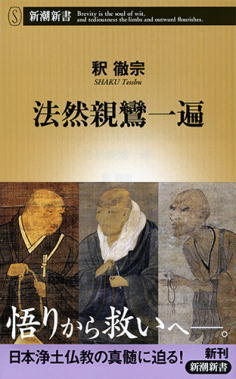
浄土真宗僧侶にして、宗教学者でもある釈徹宗による、日本浄土仏教の解説書。本書は全四章で構成されており、一～三章で法然、親鸞、一遍を詳細に取り上げ、最終章である第四章で、釈の専門でもある比較宗教学的な観点から、日本浄土仏教を分析している。
釈は本書で各宗祖の思想を分析するための概念として、心理学者の河合隼雄の「中軸構造」と「中空構造」という概念を採用する。それぞれの意味は、
中軸構造 明確な座標軸がある構造のこと。キリスト教などに代表される、中心と周辺が峻別され、混合することなどのない構造。
中空構造 すべての境界が不明瞭になっていく性質を持つ構造のこと。日本社会などに代表される、中心というものを形成せず、対立するものを調整しつつ共存させる構造。
とされる。釈は、中空構造の思想が支配的な日本にあって、法然と親鸞は極めて中軸的な構造を持った宗教思想を打ち立てたと考える。だが、そうした日本浄土仏教の思想も、一遍に至って、再び中空構造へと回帰していく。
このような図式化によって、法然、親鸞、一遍らの思想を捉えようとすることは、彼らの思想の持つ複雑性や豊饒性をそぎ落としてしまうことにもつながるため、過度の単純化をしてはならないと、釈自身、本書の中で戒めている。だが、こうした「中軸構造」、「中空構造」といった図式で日本仏教の各宗祖の教えを整理して捉えることは、日本仏教を俯瞰的なパースペクティブで理解する上で極めて有効なことのように思える。
栄西、道元、日蓮といった、他の鎌倉仏教の宗祖たちは、中軸構造と中空構造といった図式で分類された場合、どう捉えられるのであろうか。釈による日本仏教論の続編が、今から楽しみである。
第十章 三蔵経典
テーラワーダ仏教の聖典は、三蔵（ti-piṭaka）と呼ばれ、
①経蔵（Sutta-piṭaka）
②律蔵（Vinaya-piṭaka）
③論蔵（Abhidhamma-piṭaka）
の三つからなる。経蔵とは、ブッダの教えを記した経典を集めたもののことである。律蔵とは、テーラワーダ仏教の出家サンガにおける、比丘が守るべき戒律を記したもののことである。そして論蔵とは、仏教の教理と、その註釈を集めたものである。
経蔵（Sutta-piṭaka）
テーラワーダ仏教の経典は、
①長部（Dīgha-nikāya）
②中部（Majjhima-nikāya）
③相応部（Saṃyutta-nikāya）
④増支部（Aṅguttara-nikāya）
⑤小部（Khuddaka-nikāya）
の五つからなる。
長部（Dīgha-nikāya）
『長部(ディーガニカーヤ)』
片山一良訳
（大蔵出版、二〇〇三～二〇〇六年）
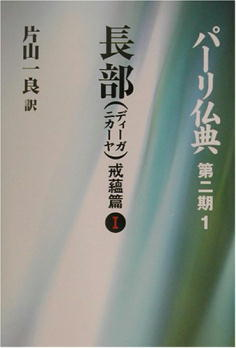
パーリ仏教学の泰斗である、片山一良による長部経典の個人全訳。長部経典の全訳は春秋社からも刊行されているが、そちらは複数の訳者によるもので、訳文の統一性などの観点からも、こちらの大蔵出版による訳のほうをおすすめする。
片山が翻訳の底本として用いたのは、ミャンマー第六結集版であり、注釈書もそれに準じたものが使用されている。そしてさらに、必要に応じてＰＴＳ版など、他の版も随時参照されている。
『沙門果経』
アルボムッレ・スマナサーラ
（サンガ、二〇一五年）
本書は長部経典に収録された「沙門果経」を、テーラワーダ仏教の僧侶であるアルボムッレ・スマナサーラが解説したものである。長部経典に収録された経典は、比較的長いものが多いが、沙門果経の原文も長い散文であり、ストーリー性もある。
そのため、本書の内容自体多岐に及ぶが、中でも興味深いのは、六師外道（仏教の立場から見ているので外道と呼ばれている）と称されるプーラナ・カッサパ、マッカリ・ゴーサーラ、アジタ・ケーサカンバラ、パグダ・カッチャーヤナ、ニガンダ・ナータプッタ、サンジャヤ・ベーラッティプッタといった当時のインドの代表的な論者たちの議論が紹介され、それらと仏法の違いについて解説された部分である。
これら六師の内、ジャイナ教の開祖であるニガンダ・ナータプッタ以外の思想は、今日ではなかなか知ることが難しい。そのような意味で、あくまで仏教の側から見た各思想の解説ではあるが、二五〇〇年前当時のインドの思想状況を知る書としても、本書は興味深いものとなっている。
『成功する生き方 「シガーラ教誡経」の実践』
アルボムッレ・スマナサーラ
（KADOKAWA、二〇一二年）
長部経典所収の『シガーラ教誡経』をアルボムッレ・スマナサーラが訳し、それに解説をつけ加えたもの。経典のタイトルの「シガーラ」とは、経典の中に登場する人物名で、このシガーラ青年にブッダが説いた教えが、本書の内容となっている。
『シガーラ教誡経』は長部経典に収録されている経典だけあって、ボリュームもあり、ストーリー性にも富む。そして、この経典では出家者よりむしろ、仏教の在家者として生きる上での心得が主題となっている。
そのため、経典の前半では在家の五戒を守ることが、いかに私たちの人生を守り、幸福へ導くものであるのかが具体的に説かれる。さらに、付き合うべき善友と、悪友の見分け方といった、他の経典ではあまり見られないようなテーマにも話は及ぶ。
『シガーラ教誡経』は、一般的には『六方礼経』という名称でも知られる。経典の中で語られる、この「六方」とは、①両親、②先生、③家族、④友人、⑤雇い人、⑥出家者という六種類の人々を意味する。そして、これらの人々とどのような人間関係を結ぶのが好ましいのかが詳細に説かれている。
ある意味、二五〇〇年以上前に説かれた人間関係論とも捉えることができるが、その内容は普遍性に富み、現代社会にも通じるところがある。在家向けの教えということもあり、仏教徒でない方にもおすすめできる一冊だ。
中部（Majjhima-nikāya）
『中部(マッジマニカーヤ)』
片山一良訳
（大蔵出版、一九九七～二〇〇二年）
中部経典も、片山一良による個人全訳が大蔵出版より刊行されている。中部経典には、呼吸による気づきの瞑想の方法を説いた「アーナパーナ・サティ・スッタ」、マインドフルネス瞑想の方法を説いた「サティパッターナ・スッタ」など、テーラワーダ仏教の瞑想の基本となる重要な経典が含まれている。
相応部（Saṃyutta-nikāya）
『相応部(サンユッタニカーヤ)』
片山一良訳
（大蔵出版、二〇一一～年）

相応部経典も、片山一良による個人全訳が大蔵出版より刊行されている。だが、長部、中部と異なり、こちらは未完である。相応部は上記の二つの経典に比べ、ボリュームも多く大変ではあると予想されるが、一日も早い全訳の完成が待たれるところである。
小部（Khuddaka-nikāya）
『小部経典』
正田大観訳
（Evolving、二〇一五年）
小部経典は、片山一良ではなく、正田大観が個人全訳を刊行している。原文に忠実な丁寧な翻訳であり、また、電子書籍ということもあり、長部、中部といった経典に比べ、廉価に入手できるようになっている。
どの巻も重要だが、特にテーラワーダ仏教の修行法について詳細に記した、パティサンビダーマッガ（無礙解道論）の翻訳が収録された十巻は貴重なものであろう。
『心に怒りの火をつけない』
アルボムッレ・スマナサーラ
（KADOKAWA、二〇一一年）
小部経典所収の『ダンマパダ』をアルボムッレ・スマナサーラが訳し、それに解説をつけ加えたもの。全部で五十の偈（gāthā）が精選され、紹介されている。
『ダンマパダ』は元々、偈（gāthā）の形式をとっていることもあり、詩句単体では意味の取り難いものも多い。本書では一つ一つの偈（gāthā）に対し、スマナサーラが懇切丁寧な解説を加えている。正田大観の訳した『ダンマパダ』を読んで、よりダンマパダについて知りたくなった読者におすすめの一冊だ。
『ブッダの「慈しみ」は愛を超える』
アルボムッレ・スマナサーラ
（KADOKAWA、二〇一二年）
小部経典所収の『慈経』をアルボムッレ・スマナサーラが訳し、それに解説をつけ加えたもの。『慈経』も『ダンマパダ』と同様に偈文の形式をとっているが、その一句ごとにスマナサーラが詳細な解説を施している。
『慈経』はそれほど長くないこともあり、テーラワーダ仏教圏では日常的に読誦されているような基本経典であるため、こうした法話を通じて内容を正しく理解しておくことは重要だ。
巻末には、「慈悲の瞑想」の実践方法や、『慈経』のパーリ語原文・日本語対訳も付録として掲載されており、小部経典を持っていない読者でも、この一冊で『慈経』について完全に理解できる、親切な構成となっている。
論蔵（Abhidhamma-piṭaka）
『清浄道論』
正田大観訳
（Evolving、二〇一六年）
五世紀にインドの学僧ブッダゴーサによって著された『清浄道論』の正田大観による現代語訳。『清浄道論』はテーラワーダ仏教の修道論を網羅する性格のものであり、あらゆる教理について述べられたものであるため、本格的にテーラワーダ仏教を学ぶものにとっては、必読の文献であると言える。
『南伝大蔵経』に邦訳が収録されていたが、訳が古くなってしまっており、長らく新しい現代語訳が待望されていたが、このたび正田大観の手によって、新訳が刊行された。電子書籍のため、廉価なのもうれしいところだ。
『ブッダの実践心理学』
アルボムッレ・スマナサーラ、藤本晃
（サンガ、二〇〇五～二〇一三年）
十世紀に活躍した学僧アヌルッダの著書『アビダンマッタサンガハ』をアルボムッレ・スマナサーラと仏教学者の藤本晃が解説したもの。原著の『アビダンマッタサンガハ』は百ページにも満たない薄い本だが、本書は全八巻にも及ぶ圧倒的なボリュームを誇っている。
だが、『ブッダの実践心理学』が長大なのには理由がある。『アビダンマッタサンガハ』は、ミャンマーで比丘が出家をした際に最初に学ぶテキストだが、一人で読むものではなく、講師が講義を行う際に参照されるものなのである。そのため、テキストの内容だけ読むと、項目が羅列してあるだけのように見えてしまい、真意が分かりにくい。
そこで本書では、テーラワーダ仏教国で『アビダンマッタサンガハ』が講じられるように、スマナサーラと藤本が原テキストを紹介した後、一行一行丁寧にその意味を解説してくれている。日本仏教にも精通した藤本の助けもあり、その日本語は極めて分かりやすく、テーラワーダ仏教に馴染みのない読者でも、明快にその教理の理解ができる記述となっている。
先述したように、『アビダンマッタサンガハ』はミャンマーで出家をしたのなら、必ず学ばなければならないようなテキストである。もし、本格的にテーラワーダ仏教の修行者たらんとする方がいるのなら、本書は必読の一冊と言えるだろう。
第十一章 仏教史
『わかる仏教史』
宮元啓一
（春秋社、二〇〇一年）
この本の中でも仏教書をカテゴライズする際に、ミャンマー仏教、タイ仏教、スリランカ仏教、中国仏教、アメリカ仏教、チベット仏教などと分類しているが、ことほど左様に仏教は今や世界各地に伝播し、世界宗教の一つといっても差し支えない規模を有している。
宮元啓一による『わかる仏教史』は、インドで発祥したこの仏教という教えが、どのような経路をたどりテーラワーダ仏教圏、チベットへ、そして中国を経由し日本に伝播したのかが、一目瞭然に分かるようになっている。
もちろん、二百ページ強の本書で、それら世界各国の仏教史の細部に至るまでを全て網羅することは不可能だ。それゆえ、各論に興味を持った読者は、それぞれ各地域の仏教史にも目を通したほうが良い。だが、仏教史全体を通史として理解する視点は重要なものであると言える。
さらに、本書は本文中で仏教の基本的な教理についても説明を施しており、そのため仏教に関する専門知識を持たない入門者でも、手軽に読むことができる。仏教史を学ぼうとする方なら、ぜひ最初に手に取っていただきたい一冊だ。
『インド仏教史』
平川彰
（春秋社、二〇一一年）
『わかる仏教史』を読んで、よりインド仏教の歴史について詳しく知りたいと思った読者におすすめなのが、本書『インド仏教史』である。
本書の原著は一九七四年に出版されているため、最新の研究が反映されていないこと、また、著者自身が述べているように、後期インド仏教は平川の専門ではないため、密教に関する記述がやや薄めになっているという瑕疵はあるものの、現在においてもインド仏教を通史として理解する際、おすすめの一冊と言えることは間違いない。
一二〇三年、インド仏教の研究と修行の中心地の一つであったヴィクラマシラー寺がイスラム教徒により破壊された頃をもって、インドにおいて仏教は下火となっていく。この事実を持って、イスラム教の影響によってインドで仏教が根絶されたという通説が流布しているが、その説に対して平川は疑義を唱えている。もし、イスラム教の隆盛が仏教絶滅の理由であるとするならば、なぜジャイナ教は今日も連綿と続いているのかというのである。
平川は、インドで仏教が衰退した理由を、ヒンドゥー教との習合が進んだためとみる。四世紀にグプタ王朝が興り、バラモン教が国教となると、仏教の影響力は徐々に衰微していった。けれども、グプタ王朝はバラモン教を国教としても、仏教を迫害することはなかったため、世間的にマイナーな存在となりつつも、仏教は消滅することはなかった。だが、ヒンドゥー教がインド社会の中で圧倒的にメジャーな存在となっていくなかで、仏教側もヒンドゥー教から影響を受け、密教化を強めていく。そして、そうした密教化こそが、仏教のアイデンティティを失わせ、ヒンドゥー教と大差のない教えとなっていってしまったというのが、平川の見立てである。
通史としてインド仏教を理解することによって、こうしたインドにおける仏教の変遷も理解できる。インド仏教を学ぶ上で、大いに参考になる一冊だ。
『禅思想史講義』
小川隆
（春秋社、二〇一五年）
『わかる仏教史』を読んで、より中国仏教の歴史について詳しく知りたいと思った読者におすすめなのが、本書『禅思想史講義』である。
本書はテーマを禅に絞っているため、それ以外の中国仏教の宗派については触れないが、最新の研究の成果も盛り込まれた、中国禅の思想の流れをスムーズに理解できる本となっている。
本書は四章立てで、
第一講 初期の禅
第二講 唐代の禅
第三講 宋代の禅
第四講 二十世紀の禅
という構成になっている。
第一講では、二十世紀になって発見された敦煌文献により、従来六祖慧能の教えとされてきたものに、神会という僧侶が大きく関わっていたことが明かされる。
第二講では、唐代の禅について詳しく語られ、当時の中国禅界の主流を為した馬祖道一の教えと、その馬祖の教えに対抗して興った石頭奇遷の教えが比較されつつ解説される。
第三講では、宋代の禅について、小川がかつて『『臨済録』 禅の語録のことばと思想』で展開したような文字禅と看話禅といった図式を用いて明快に解説する。
第四講では、鈴木大拙の業績などを中心に、日本における禅の受容が分析される。読者は突然、第四講になり舞台が中国から日本へ移ることに戸惑いを覚えるかもしれない。しかし、小川自身が指摘するように、今日英米圏で禅はもっぱら中国語の発音の「Chan」ではなく、日本語の発音の「Zen」として広まっていることが示すように、禅は今日中国仏教という枠を超えて世界的な広がりをみせている。そうした禅の通史として、一つの思想史の「流れ」を概観できるのも、本書の長所の一つである。
『日本仏教史』
末木文美士
（新潮社、一九九六年）
『わかる仏教史』を読んで、より日本仏教の歴史について詳しく知りたいと思った読者におすすめなのが、本書『日本仏教史』である。
本書では、飛鳥時代における仏教の渡来から始まり、江戸時代までの日本仏教が通史として解説されている。それらの記述には、戦後の仏教学の知見が縦横無尽に活用され、私たちの固定観念を打破する識見に満ちている。
一例を挙げるならば、私たちは明治時代以前の日本仏教の僧侶は妻帯していなかったと思いがちだ。これは、法然や道元といった日本仏教の主だった各宗派の宗祖が妻帯していなかったイメージのせいかもしれないが、末木によれば、平安末から鎌倉時代頃には僧侶の肉食・妻帯は当たり前のことになっていたと本書の中で述べられている。
また、末木は日本仏教には、本覚思想が通奏低音のようにあると述べ、そうした本覚思想は仏教の自己崩壊を内在する思想であると喝破する。末木は遠藤周作の小説『沈黙』の中で登場人物が語る、「日本という地は、あらゆる思想の根を腐らす恐ろしい沼地」であるとする台詞に着目する。シンクレティズムの力の強い日本においては、いかなる外来思想もその本質を失い、日本土着の思想に取り込まれてしまうというのだ。
仏教においては、その「根を腐らす恐ろしい沼地」が本覚思想にあるのではないかと末木は推理する。確かに、本覚思想が根を張れば、仏教がその本質として持っていた、「悟り」や「修行」といった概念は無意味化していくことにもつながる。
こうした日本仏教の現状に対し、「黒船」のごとくテーラワーダ仏教が紹介されるのには、まだ二十世紀末までの時間が必要であった。
『大アジア思想活劇』
佐藤哲朗
（サンガ、二〇〇八年）
『日本仏教史』では江戸時代までの日本仏教史がカバーされているが、明治以降の日本仏教史について関心のある方におすすめなのが本書である。
本書では、日本の近代史の中で、国家や権威ある学問的機関、宗教組織などによって語られることの少なかった異能の人々が縦横無尽に活躍する。
平井金三、野口復堂、釈興然といった正史ではメジャーではない人々の活躍するさまは、さながら物語のようでもあり、読者は「明治時代には、こんなにも自由に人生を謳歌した日本人がいたのか！」と驚くことだろう。
ここには、「失われた二十年」と形容される、長期化したデフレに苦しむ暗い現代日本人と異なる、破天荒な人間の生き様がある。
そして本書では、彼ら素晴らしい明治人の活躍に留まらず、近代スリランカ仏教を語る上で欠かせない人物アナガーリカ・ダルマパーラに焦点をあてる。百年前に、スリランカから海をはるばる渡って来日したダルマパーラ。本書を読めば彼が日本近代仏教史の中でキーパーソンであることがよく分かる。
『日本仏教史』の著者でもある末木文美士にも高く評価された本書だが、残念なのは専門書のため値段が非常に高価なこと。より廉価な電子書籍版の刊行が待たれるところである。
『別冊サンガジャパン１ 仏教瞑想ガイドブック』
（サンガ、二〇一四年）
日本仏教史は、二十世紀末になり、大きな転換点を迎える。テーラワーダ仏教が黒船のように日本を訪れ、仏教界に大きなインパクトを与えたのである。無論、明治に開国して以来、テーラワーダ仏教の日本への普及は少しずつではあるが続いてきた。だが、一九九〇年代末に、スリランカ出身のテーラワーダの比丘、アルボムッレ・スマナサーラが伝道を始めると、それまでとは次元の異なる規模で、テーラワーダ仏教は日本に根付いていった。
本書に収録された青野貴芳による論文「日本のヴィパッサナー瞑想史」は、そうしたここ二十年の日本におけるテーラワーダ仏教伝道の通史となっている。また、同じく青野による「マインドフルネス概観」には、二十世紀の世界における、テーラワーダ仏教伝道の歴史が、これまた詳述されている。
上記の青野の論考は歴史家的視点による客観的な記述だが、本書にはより主観性の強いインタビュー記事として、日本テーラワーダ協会初代会長の鈴木一生による「テーラワーダ仏教は在家が支える」も収録されている。鈴木は九十年代、日本におけるテーラワーダ仏教黎明期を支えた功労者で、その肉声がこうして活字化されているのは貴重なことである。
現在進行形の、日本仏教の現場を知りたいという方にぜひおすすめの一冊である。
第十二章 仏教辞典
『ポー・オー・パユットー仏教辞典（仏法篇）』
ポー・オー・パユットー（野中耕一訳）
（サンガ、二〇一二年）
タイ仏教界を代表する学僧であるポー・オー・パユットーによる仏教辞典。数多くの日本語仏教辞典が出版されている中で、テーラワーダ仏教を主とした仏教辞典は本書と『上座仏教事典』以外、存在しないだろう。
辞書としての構成もユニークで、普通なら五十音順やアルファベット順に項目が並ぶところを、増支部（Aṅguttara-nikāya）に倣い、法数順に項目が列挙されている。「四聖諦」なら四の法数のグループとして紹介され、「八正道」なら八の法数のグループに分類されるわけである。
テーラワーダ仏教の用語には、大乗仏教には無い言い回しもあり、そのような言葉の意味について調べる際、本書は大変重宝するものである。また、辞書としては比較的廉価な部類に入るため、一家に一冊あると、何かと役に立つ本だ。
『別冊サンガジャパン２ タイ・ミャンマー人物名鑑』
（サンガ、二〇一五年）
近代タイを代表する比丘・在家修行者二十三人と、近代ミャンマーを代表する比丘・在家修行者三十三人を紹介した人物名鑑。従来、これだけの数のテーラワーダ仏教の僧侶を体系的かつ網羅的に紹介した人物事典はなかったため、貴重な資料と言える。
特に、天野和公が監修を務めたミャンマー編では、ミャンマー語に堪能な天野にしか為し得ないような調査能力で、日本ではまだ邦訳書などない、多くの未知の比丘たちについて、驚くほど詳細な情報が記述されている。
また、人物名鑑以外の記事でも、ミャンマーでは珍しい女性の瞑想指導者、ディーパンカラ・サヤレーのインタビューなど、他では読めない貴重な記事が収録されており、興味深い。
刊行からある程度時間が経ったら、内容をアップデートした第２版を読んでみたいものである。
あとがき
「読者の仏道修行の役に立つブックガイドを作りたい」
と思い立ってから、ずいぶん時間が経ってしまった。編集を担当していただいた糸賀祐二さん、本当に原稿を辛抱強くお待ちしていただき、ありがとうございました。
現時点での私の能力を限界まで用いて本を選んだが、元々、テーラワーダ仏教と曹洞宗の家風でしか修行をした経験が無いため、チベット仏教や、曹洞宗以外の日本仏教については、不十分な選書になってしまった部分もあるかと思う。偏りのあるブックガイドになってしまったかもしれないが、ご寛恕いただければ幸いである。
本書が、読者の皆さんの苦しみを取り除くことにほんの少しでも役に立つことがあれば、訳者として望外の喜びである。
二〇一七年二月
星 飛雄馬
星 飛雄馬 （Huma Hoshi）
一九七四年、長野県生まれ。著述家・翻訳家。東京都立大学大学院社会科学研究科修士課程修了。東京大学社会情報研究所教育部修了。修士（社会学）（東京都立大学、二〇〇一年）。専門は宗教社会学、社会政策。二〇〇四年ミャンマー、ヤンゴンのマハーシ瞑想センターにて約３カ月瞑想修行をする。東方学院にてパーリ語を学ぶ。著書に『初期仏教キーワード』（サンガ）、『４５分でわかる！ 数字で学ぶ仏教語。』（マガジンハウス）、訳書に『[増補版]手放す生き方』『無常の教え』（共にアーチャン・チャー著）、『ヴィパッサナー瞑想』（マハーシ・サヤドー）（共にサンガ）などがある。
E-mail: infohoshi@gmail.com
Blog:http://d.hatena.ne.jp/Huma/
Twitter:@humahoshi
６０分でわかる！仏教書ガイド
─────────────────
発行日 2017年2月20日 電子書籍版
著者 星 飛雄馬
発行者 糸賀祐二
発行所 Evolving
〒300-1155
茨城県稲敷郡阿見町吉原572-17
メール info@evolving.asia
─────────────────
©2017 Huma Hoshi